<meta charset="utf-8"><title>11/7のコラム note貼り付け</title>
<style>
/* one column of numbered paste steps; text steps vs image steps differ by marker */
:root{--bg:#F5F4F0;--card:#FFFFFF;--ink:#1D2321;--mute:#5F665F;--line:#DCDAD2;--btn:#1F5FBF;--btnok:#2E8B4F;--img:#E9F3EC;--imgink:#22663B;--sans:'IBM Plex Sans JP','Hiragino Sans','Noto Sans JP',sans-serif}
@media (prefers-color-scheme:dark){:root:not([data-theme="light"]){--bg:#171A19;--card:#202423;--ink:#ECEDE8;--mute:#A3AAA2;--line:#343937;--btn:#4D8BE6;--btnok:#3FA866;--img:#1E2C23;--imgink:#8FD3A6;color-scheme:dark}}
:root[data-theme="dark"]{--bg:#171A19;--card:#202423;--ink:#ECEDE8;--mute:#A3AAA2;--line:#343937;--btn:#4D8BE6;--btnok:#3FA866;--img:#1E2C23;--imgink:#8FD3A6;color-scheme:dark}
body{background:var(--bg);color:var(--ink);font-family:var(--sans);font-size:15px;line-height:1.75;padding:20px 16px 60px}
main{max-width:680px;margin:0 auto;display:grid;gap:28px}
header h1{font-size:22px;margin:0 0 6px;text-wrap:balance}
header p{margin:0;color:var(--mute);font-size:14px}
nav{display:flex;gap:8px;flex-wrap:wrap;margin-top:12px}
nav a{border:1px solid var(--line);border-radius:999px;padding:4px 14px;color:var(--ink);text-decoration:none;font-size:14px;background:var(--card)}
.part h2{font-size:18px;line-height:1.5;margin:0 0 12px;text-wrap:balance;display:flex;gap:10px;align-items:baseline;flex-wrap:wrap}
.tag{font-size:13px;background:var(--ink);color:var(--bg);border-radius:6px;padding:1px 9px}
.steps{list-style:none;margin:0;padding:0;display:grid;gap:12px}
.st{background:var(--card);border:1px solid var(--line);border-radius:12px;padding:12px;min-width:0}
.hd{display:flex;align-items:center;gap:8px;margin-bottom:8px}
.no{width:26px;height:26px;border-radius:50%;background:var(--btn);color:#fff;display:inline-flex;align-items:center;justify-content:center;font-size:13px;font-weight:700;flex:0 0 26px}
.im .no{background:var(--btnok)}
.hd em{font-style:normal;font-size:12px;background:var(--img);color:var(--imgink);border-radius:6px;padding:0 8px}
.bx{font-size:13.5px;line-height:1.7;border:1px solid var(--line);border-radius:8px;padding:8px 10px;max-height:110px;overflow:auto;overflow-wrap:anywhere}
.bx.tall{max-height:150px}.bx p{margin:0 0 6px}.bx h2{font-size:14px;margin:8px 0 4px}.bx a{color:var(--btn)}
.st img{display:block;width:100%;max-width:100%;border:1px solid var(--line);border-radius:8px}
.sub{font-size:12.5px;color:var(--mute);margin:6px 0 0}
.cp{width:100%;margin-top:8px;padding:12px;border:0;border-radius:10px;background:var(--btn);color:#fff;font:600 15px var(--sans);cursor:pointer}
.cp.ok{background:var(--btnok)}.cp.dl{background:var(--btnok)}.cp:focus-visible{outline:3px solid var(--ink);outline-offset:2px}
.xh{font-size:15px;margin:20px 0 10px}
.fb{font-size:13px;line-height:1.7;margin:8px 0 0;padding:8px 10px;border-radius:8px;background:var(--img);color:var(--imgink)}
.opts{display:grid;grid-template-columns:repeat(auto-fill,minmax(240px,1fr));gap:10px}
.opt{min-width:0}.opt img{display:block;width:100%;border:1px solid var(--line);border-radius:8px}
.ol{display:flex;align-items:center;gap:8px;margin-top:6px}.ol b{font-size:13px;flex:0 0 auto}.ol .on{font-size:12.5px;color:var(--mute);flex:1;min-width:0}.ol .cp{width:auto;flex:0 0 auto;padding:9px 14px}.ol .cp{margin:0;padding:9px}
.toast{font-size:13px;color:var(--mute);margin-top:6px}
</style>
<main><header><h1>11/7のコラム note貼り付け</h1><p>いま公開済みは12本です。青い番号は文章、緑は画像です。</p><nav><a href="#p1">1</a><a href="#p2">2</a><a href="#p3">3</a><a href="#p4">4</a><a href="#p5">5</a><a href="#p6">6</a><a href="#p7">7</a><a href="#p8">8</a><a href="#p9">9</a><a href="#p10">10</a><a href="#p11">11</a><a href="#p12">12</a></nav></header><section class="part" id="p1"><h2><span class="tag">OFF GRID</span>ハータ、ライセンスの40点に届く　ラルフは「F1にいるべきじゃない」</h2><p class="sub">サイトに公開：07:16</p><ol class="steps">
<li class="st im"><div class="hd"><span class="no">1</span><b>見出し画像</b><em>画像</em></div>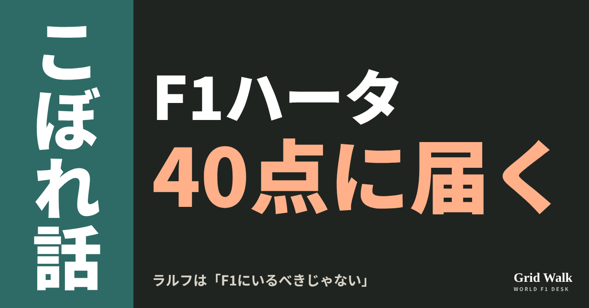<button class="cp dl" data-img="img/herta-superlicence-reached-20261107.png" data-name="herta-superlicence-reached-20261107_見出し画像.png">ダウンロード</button></li>
<li class="st"><div class="hd"><span class="no">2</span><b>タイトル</b></div><div class="bx" id="p1t">ハータ、ライセンスの40点に届く　ラルフは「F1にいるべきじゃない」</div><button class="cp" data-plain="p1t">タイトルをコピー</button></li>
<li class="st"><div class="hd"><span class="no">3</span><b>本文</b></div><div class="bx tall" id="p1r"><p>コルトン・ハータが、F1の決勝に出るためのスーパーライセンスの40点に届きました。サンパウロGPの金曜（現地6日）のFP1で、セルジオ・ペレスの代わりにキャデラックに乗り、1点の条件だった100km、24周を走りきりました。一方で、元F1ドライバーのラルフ・シューマッハーは、ハータが候補かと聞かれて「イースターとクリスマスが同じ日に重なったらね」と答えています。</p><p>11月5日の「あと1点」の回と、元の記事へのリンクはサイトで → <a href="https://f1gridwalk.github.io/lens/herta-superlicence-reached-20261107/?utm_source=note&amp;utm_campaign=herta-superlicence-reached-20261107">https://f1gridwalk.github.io/lens/herta-superlicence-reached-20261107/?utm_source=note&amp;utm_campaign=herta-superlicence-reached-20261107</a></p><p>メキシコのあとも39点で、残りは1点。その内訳と、順位表の誤りで計算がずれた話は、11月5日のこぼれ話に書きました（https://f1gridwalk.github.io/lens/herta-superlicence-one-point-20261105/ ）。</p><h2>残り7分で24周目</h2><p>イギリスのRacingNews365によると、ハータは条件の100kmにあたる24周を、セッション残り7分のところで走り終えました。ブラジルのGrande Prêmioは、この日の周回を31周、ベストタイムを1分14秒275の20位と伝えています。ドイツのMotorsport-Total.comは、同じキャデラックのバルテリ・ボッタスとの差を約0.9秒と書いています。</p><p>Grande Prêmioはこれを40点目と伝え、スーパーライセンスを申請できるようになったと書いています。申請を扱うのはFIAで、Grande Prêmioによると、キャデラックはまだハータを2027年のレースドライバーとして発表していません。FIAやキャデラックによる40点の発表は、確かめた範囲では見当たりません。</p><h2>ラルフ「燃料を燃やしているだけ」</h2><p>Motorsport-Total.comによると、ラルフはドイツのテレビ局スカイの解説者として、ペレスの隣の2つ目の席の候補かと聞かれ、冒頭の言葉で答えました。続けてこう話しています（要約はサイトに https://f1gridwalk.github.io/news/de-motorsporttotal-ralf-herta-cadillac/ ）。</p><blockquote><p>「フランツ・トストの言い方を借りれば、彼は燃料を燃やしているだけだ」「そもそも、何のためなのか分からない」「ほかの人を乗せることだってできる。若い人を乗せることだって」（ラルフ・シューマッハー、Motorsport-Total.com／ドイツ）</p></blockquote><p>理由に挙げたのはF2です。ハータは今季のF2で26点の19位。勝利も表彰台もありません（Motorsport-Total.com）。</p><blockquote><p>「F2での彼は、本当にそれほどひどかった」（同）</p></blockquote><blockquote><p>「アメリカ人を後押ししようとするのは、いいことだと思う」「でも、意味がなきゃいけない。彼はF1にいるべきじゃない」（同）</p></blockquote><p>代わりに名前を挙げたのが、マクラーレン育成のレオナルド・フォルナローリです。Motorsport-Total.comは、F2とF3の王者と紹介しています。</p><blockquote><p>「文句なしに強い男だ」（同）</p></blockquote><p>そのフォルナローリも同じFP1でマクラーレンに乗り、11位でした（Crash.netの結果表）。ラルフは10月には、キャデラックの席にエステバン・オコンを推していました（https://f1gridwalk.github.io/lens/ralf-bottas-cycling-20261025/ ）。</p><h2>ハータ「パーセンテージは言えません」</h2><p>ハータ本人は、2027年に正式な席をつかめる見込みについて、数字は出しませんでした。</p><blockquote><p>「パーセンテージは言えません」「もちろん、それが目標です。そのためにここにいるし、そのためにたくさんのものを注いでいます」（ハータ、Motorsport-Total.com／ドイツ）</p></blockquote><p>Motorsport-Total.comによると、キャデラックの2027年の席は、ペレスが10月末に2029年まで契約を延ばして1つが埋まり、ボッタスが残るかどうかはまだ決まっていません。</p><p>編集部としては、点がそろったことで、話は資格の有無から、選ばれるかどうかに移ったと見ています。ラルフの言葉は解説者の見方で、決めるのはチームです。</p><p><strong>キャデラックの2つ目の席、ハータに任せてみたいと思いますか？</strong></p><p>━━━━━━━━━━</p><p><strong>F1 Grid Walk では、世界のF1ニュースを毎日日本語でまとめています。</strong></p><p>海外の記事の要約を、毎日載せています。</p><p><a href="https://f1gridwalk.github.io/">https://f1gridwalk.github.io/</a></p><p>ほかの海外記事も読みたい方は、F1 Grid Walkへ。</p><p><a href="https://f1gridwalk.github.io/lens/herta-superlicence-reached-20261107/">https://f1gridwalk.github.io/lens/herta-superlicence-reached-20261107/</a></p><p>━━━━━━━━━━</p><p><a href="https://www.motorsport-total.com/formel-1/news/ralf-schumacher-zieht-ueber-colton-herta-her-hat-in-der-f1-nichts-zu-suchen-26110612">出典：Motorsport-Total.com（ドイツ）</a></p><p><a href="https://racingnews365.com/now-its-official-colton-herta-finally-has-his-fia-superlicence">出典：RacingNews365（オランダ）</a></p><p><a href="https://grandepremio.com/en/f1/herta-earns-final-f1-super-licence-point-in-sao-paulo-gp-practice/">出典：Grande Prêmio（ブラジル）</a></p><p><a href="https://www.crash.net/f1/results/1109469/1/f1-brazil-grand-prix-full-friday-practice-results">出典：Crash.net（イギリス）</a></p></div><button class="cp" data-rich="p1r">本文をコピー</button></li>
<li class="st"><div class="hd"><span class="no">4</span><b>ハッシュタグ</b></div><div class="bx" id="p1h">#F1 #F1jp #コルトンハータ #キャデラック #スーパーライセンス #ラルフシューマッハー #サンパウロGP #F1こぼれ話 #OFFGRID</div><button class="cp" data-plain="p1h">タグをコピー</button></li>
</ol><h3 class="xh">X</h3><ol class="steps">
<li class="st im"><div class="hd"><b>X用の画像</b><em>画像</em></div>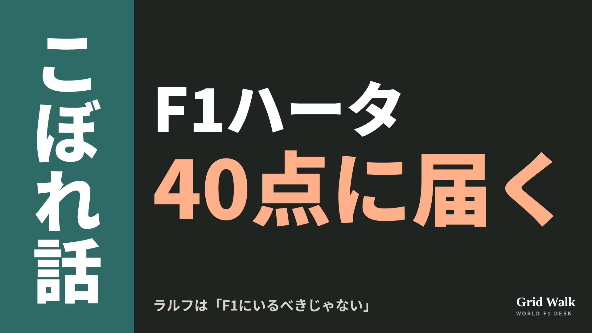<button class="cp dl" data-img="img/x_herta-superlicence-reached-20261107.png" data-name="x_herta-superlicence-reached-20261107.png">ダウンロード</button></li>
<li class="st"><div class="hd"><b>① noteをシェアするときの文</b></div><div class="bx" id="p1x0">コルトン・ハータが、FP1で24周を走りきってスーパーライセンスの40点に届いたと報じられました。一方、ラルフ・シューマッハーは「イースターとクリスマスが同じ日に重なったらね」。noteにまとめました #F1jp #キャデラック</div><button class="cp" data-plain="p1x0">コピー</button></li>
<li class="st"><div class="hd"><b>② ①への返信</b></div><div class="bx" id="p1x1">ほかの海外記事も読みたい方は、F1 Grid Walkへ。
https://f1gridwalk.github.io/lens/herta-superlicence-reached-20261107/?utm_source=x&amp;utm_campaign=herta-superlicence-reached-20261107</div><button class="cp" data-plain="p1x1">コピー</button></li>
<li class="st"><div class="hd"><b>③ ②への返信</b></div><div class="bx" id="p1x2">毎日の海外F1ニュースは、日本語でこちらにまとめています。
https://f1gridwalk.github.io/</div><button class="cp" data-plain="p1x2">コピー</button></li>
</ol></section><section class="part" id="p2"><h2><span class="tag">OFF GRID</span>カマラ、地元F1の金曜は18位→16位　走る前は「なじみがゼロ」</h2><p class="sub">サイトに公開：07:16</p><ol class="steps">
<li class="st im"><div class="hd"><span class="no">1</span><b>見出し画像</b><em>画像</em></div>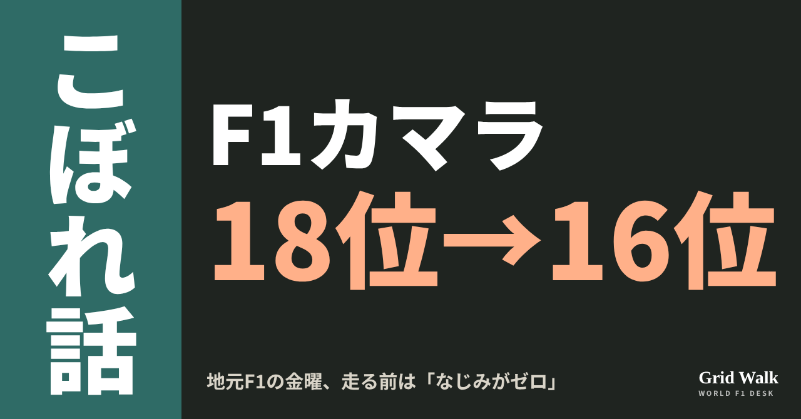<button class="cp dl" data-img="img/camara-first-practice-20261107.png" data-name="camara-first-practice-20261107_見出し画像.png">ダウンロード</button></li>
<li class="st"><div class="hd"><span class="no">2</span><b>タイトル</b></div><div class="bx" id="p2t">カマラ、地元F1の金曜は18位→16位　走る前は「なじみがゼロ」</div><button class="cp" data-plain="p2t">タイトルをコピー</button></li>
<li class="st"><div class="hd"><span class="no">3</span><b>本文</b></div><div class="bx tall" id="p2r"><p>「一度も乗ったことがない」。金曜の朝に載ったインタビューで、ラファエル・カマラはハースの車についてそう話していました。その日、21歳は地元インテルラゴスでF1デビューの週末を走り始め、FP1は18位、FP2は16位。ただ、小松礼雄代表が見ているのは、順位とは別のところでした。</p><p>平川亮が13位でゴールして10位になった回と、ブラジル各紙の見出しの違いを並べたコラムへのリンクはサイトで → <a href="https://f1gridwalk.github.io/lens/camara-first-practice-20261107/?utm_source=note&amp;utm_campaign=camara-first-practice-20261107">https://f1gridwalk.github.io/lens/camara-first-practice-20261107/?utm_source=note&amp;utm_campaign=camara-first-practice-20261107</a></p><h2>走る前は「なじみがゼロ」</h2><p>ブラジルのMixvaleが金曜の朝、FP1を前に載せた、インテルラゴスでの単独インタビューです。</p><blockquote><p>「この車には、なじみがゼロだと思います。一度も乗ったことがないので」「今年はフェラーリのシミュレーターで走りましたが、まったく別物です」（カマラ、Mixvale／ブラジル）</p></blockquote><p>FP1は18位でした（Motorsport Week）。結果表では、トップのランド・ノリスとの差は1.979秒、同じハースのオリバー・ベアマンは12位（+1.120秒）です。FP2では16位に上がり、トップのアンドレア・キミ・アントネッリとの差は1.798秒。ベアマンは10位（+1.228秒）でした（Vavel Brasil）。</p><h2>コースに入ると、歓声が聞こえた</h2><p>2つの練習を終えたあとのカマラの言葉を、F1Maniaが伝えています。</p><blockquote><p>「最初の練習は、慣れることのほうが大きかった。新しいことばかりで」「FP2ではいくつか調整して、よくなっていきました」（カマラ、F1Mania／ブラジル）</p></blockquote><blockquote><p>「最初の練習でコースに入るとき、みんなが、観客が叫んでいるのが分かりました。だから、いつもより気持ちが高ぶりました」「でも走り出せば、集中して入るし、考えることがたくさんあるので、そこからは普通のことです」（カマラ、F1Mania／ブラジル）</p></blockquote><h2>小松代表「本当に彼を守りたい」</h2><p>小松代表は金曜、カマラを前倒しで乗せた決断について話しました（F1公式）。まず挙げたのは、メキシコシティGPに急きょ出場した平川亮です。平川は、13位でゴールしたあと、ほかの車への罰で繰り上がって10位・1点でした（11月2日のコラム https://f1gridwalk.github.io/lens/hirakawa-first-point-20261102/ ）。</p><blockquote><p>「リョウは、あれほど急な知らせで、メキシコで素晴らしい仕事をしました」「彼は本当にプロフェッショナルで、一緒に仕事がとてもしやすい」「だから当然、ここでの私の決断は難しくなります」（小松礼雄代表、F1公式／イギリス）</p></blockquote><blockquote><p>「外から見れば、来年誰と契約したかなどを考えると、とても簡単な決断に見えるかもしれません。でも、そうではありませんでした」（小松礼雄代表、F1公式／イギリス）</p></blockquote><p>カマラとは日曜の夜、月曜、火曜と話したそうです。</p><blockquote><p>「どの会話でも、確信が強まりました。ラファが何を出せるか、ですらなく、すべてにどう振る舞い、どう向き合い、雑音を締め出せるかについてです」「集中して、単純にして、複雑にしすぎない」（小松礼雄代表、F1公式／イギリス）</p></blockquote><p>F1公式によると、カマラの起用が正式に決まっているのはインテルラゴスだけで、F2のカタールとアブダビとの兼ね合いもあります。この先について、小松代表はこう話しています。</p><blockquote><p>「一歩ずつ進みたいんです。ラファエルにとっては、大きな挑戦ですから」「本当に彼を守りたいし、外からのプレッシャーはかけたくありません」（小松礼雄代表、F1公式／イギリス）</p></blockquote><p>ラスベガスも走るという報道は、11月5日のコラム（https://f1gridwalk.github.io/lens/camara-home-debut-20261105/ ）で取り上げました。編集部としては、18位と16位よりも、歓声を聞いたあとに「そこからは普通のこと」と言えた金曜のほうが、小松代表の物差しに合っていそうだと見ています。</p><p><strong>「なじみがゼロ」から始まった地元の金曜。あなたは18位と16位を、どう見ますか？</strong></p><p>━━━━━━━━━━</p><p><strong>F1 Grid Walk では、世界のF1ニュースを毎日日本語でまとめています。</strong></p><p>海外の記事の要約を、毎日載せています。</p><p><a href="https://f1gridwalk.github.io/">https://f1gridwalk.github.io/</a></p><p>ほかの海外記事も読みたい方は、F1 Grid Walkへ。</p><p><a href="https://f1gridwalk.github.io/lens/camara-first-practice-20261107/">https://f1gridwalk.github.io/lens/camara-first-practice-20261107/</a></p><p>━━━━━━━━━━</p><p><a href="https://www.motorsportweek.com/2026/11/06/lando-norris-edges-out-kimi-antonelli-as-rafael-camara-makes-haas-debut-at-f1-sao-paulo-gp-fp1/">出典：Motorsport Week（イギリス）</a></p><p><a href="https://www.mixvale.com.br/2026/11/06/rafa-camara-admite-intimidade-zero-com-carro-da-haas-antes-do-gp-de-sao-paulo-nunca-andei/">出典：Mixvale（ブラジル）</a></p><p><a href="https://www.vavel.com/br/motor/2026/11/06/formula1/1278355-antonelli-lidera-o-tl2-da-formula-1-em-interlagos-no-brasil.html">出典：Vavel Brasil（ブラジル）</a></p><p><a href="https://f1mania.net/f1/f1-rafael-camara-analisa-primeiro-dia-de-treinos-com-a-haas-em-interlagos">出典：F1Mania（ブラジル）</a></p><p><a href="https://www.formula1.com/en/latest/article/komatsu-explains-why-fast-tracking-camara-into-haas-seat-was-a-tough-decision-after-hirakawa-performance.6N8NbSuekc1oGCylHgVZ2g">出典：F1公式サイト（イギリス）</a></p></div><button class="cp" data-rich="p2r">本文をコピー</button></li>
<li class="st"><div class="hd"><span class="no">4</span><b>ハッシュタグ</b></div><div class="bx" id="p2h">#F1 #F1jp #カマラ #ハース #小松礼雄 #平川亮 #サンパウロGP #インテルラゴス #F1こぼれ話 #OFFGRID</div><button class="cp" data-plain="p2h">タグをコピー</button></li>
</ol><h3 class="xh">X</h3><ol class="steps">
<li class="st im"><div class="hd"><b>X用の画像</b><em>画像</em></div>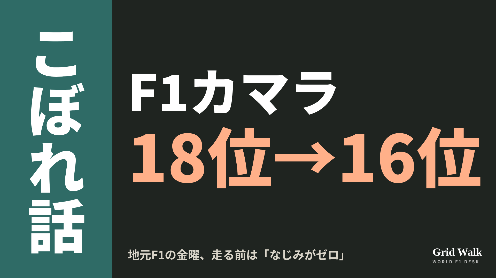<button class="cp dl" data-img="img/x_camara-first-practice-20261107.png" data-name="x_camara-first-practice-20261107.png">ダウンロード</button></li>
<li class="st"><div class="hd"><b>① noteをシェアするときの文</b></div><div class="bx" id="p2x0">地元インテルラゴスでF1デビューの週末を走り始めたカマラ。走る前は「なじみがゼロ」と話し、FP1は18位、FP2は16位でした。小松代表が見ているのは順位とは別のところ。noteにまとめました #F1jp #ハース</div><button class="cp" data-plain="p2x0">コピー</button></li>
<li class="st"><div class="hd"><b>② ①への返信</b></div><div class="bx" id="p2x1">ほかの海外記事も読みたい方は、F1 Grid Walkへ。
https://f1gridwalk.github.io/lens/camara-first-practice-20261107/?utm_source=x&amp;utm_campaign=camara-first-practice-20261107</div><button class="cp" data-plain="p2x1">コピー</button></li>
<li class="st"><div class="hd"><b>③ ②への返信</b></div><div class="bx" id="p2x2">毎日の海外F1ニュースは、日本語でこちらにまとめています。
https://f1gridwalk.github.io/</div><button class="cp" data-plain="p2x2">コピー</button></li>
</ol></section><section class="part" id="p3"><h2><span class="tag">WORLD GRID</span>アントネッリ「僕にとっても大きな変化」　「新しい車のおかげ」論に各国は</h2><p class="sub">サイトに公開：07:16</p><ol class="steps">
<li class="st im"><div class="hd"><span class="no">1</span><b>見出し画像</b><em>画像</em></div>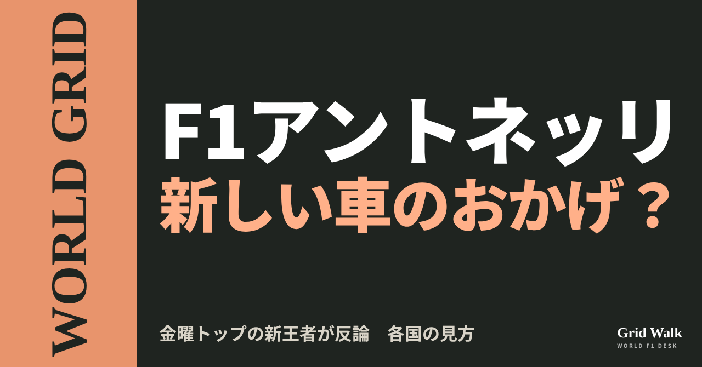<button class="cp dl" data-img="img/antonelli-new-cars-debate-20261107.png" data-name="antonelli-new-cars-debate-20261107_見出し画像.png">ダウンロード</button></li>
<li class="st"><div class="hd"><span class="no">2</span><b>タイトル</b></div><div class="bx" id="p3t">アントネッリ「僕にとっても大きな変化」　「新しい車のおかげ」論に各国は</div><button class="cp" data-plain="p3t">タイトルをコピー</button></li>
<li class="st"><div class="hd"><span class="no">3</span><b>本文</b></div><div class="bx tall" id="p3r"><p>王者になって最初の金曜、アンドレア・キミ・アントネッリ（メルセデス）はいきなり一番上にいました。サンパウロGPのFP2は1分10秒763でトップ。ランド・ノリス（マクラーレン）が0.253秒差の2番手、マックス・フェルスタッペン（レッドブル）が3番手でした（F1公式）。そのアントネッリに、ネットでは、2026年の新しい車のおかげで王者になれたのではないか、という声が向けられています。本人の答えは「僕にとっても、とても大きな変化でした」。</p><p>各国の報道の違いと、元の記事へのリンクはサイトで → <a href="https://f1gridwalk.github.io/lens/antonelli-new-cars-debate-20261107/?utm_source=note&amp;utm_campaign=antonelli-new-cars-debate-20261107">https://f1gridwalk.github.io/lens/antonelli-new-cars-debate-20261107/?utm_source=note&amp;utm_campaign=antonelli-new-cars-debate-20261107</a></p><h2>「僕は適応しなければならなかった」</h2><p>ドイツのMotorsport-Totalによると、王座のあと、ふさわしい王者なのか、新しい車が味方しただけなのか、という議論が世界中のネットの掲示板やSNSで続いています。アントネッリはこう答えました。</p><blockquote><p>「この車は去年とはまったく違うので、僕は適応しなければなりませんでした」「取り組み方を少し変える必要がありました」（アントネッリ、Motorsport-Total／ドイツ）</p></blockquote><blockquote><p>「このシーズンを通して、いつもできるだけ自然に走ろうとしてきました」「僕にとって簡単だったわけではありません。僕にとっても、とても大きな変化でした」（同）</p></blockquote><p>記事はまた、チームメイトのジョージ・ラッセルのように、パワーの出方やエネルギー管理が自然な走りとぶつかると公に不満を言ったドライバーもいたと説明しています。鈴鹿のようなコースでは、エネルギー管理の妥協が走りの流れを乱し、不満まで生んだ。きれいに走れなかったコーナーのほうが、バッテリーがより多く充電されて得になることもあった、とも書いています。</p><blockquote><p>「いくつかのコースでは、走るのが少し苦痛なことさえあります」「でも来年は、その点でよくなるはずです。電気の出力が減って、エンジンの比重が増えれば、僕たち全員にとって少し楽になるはずです」（アントネッリ、Motorsport-Total／ドイツ）</p></blockquote><h2>イギリスには「価値はない」という論説</h2><p>イギリスのRaceFansでは10月24日、キース・コランタインが論説で「上手に走るドライバーが罰せられるシリーズでは、ドライバーズタイトルに価値はない」と書きました。アントネッリが歴代屈指の才能だと信じているとは「正直に言えない」とし、それは「今年誰がタイトルを取っても」変わらない、としています。9月の同じRaceFansの記事では、ラッセルがこう話していました。</p><blockquote><p>「もちろん、キミはものすごく才能がある」「この車たちにとって、ある意味で完璧な走り方なんだ」（ラッセル、RaceFans／イギリス）</p></blockquote><p>一方、金曜のSky Sportsは「新しい世界王者としてコースに戻った最初の一日を、見事に終えた」と書き出し、この議論には触れていません。</p><h2>イタリアは「正しいチームに、正しい時に」</h2><p>イタリアのIl Postは11月2日の「キミ・アントネッリの何が特別か」で、この点を正面から書いていました。規則が大きく変わった年に「アントネッリは正しいチーム、メルセデスに、正しい時にいた」。「メルセデスは車を当て、アントネッリの走り方はその車に完璧だと分かった」。メルセデスのアンドリュー・ショブリンが彼を「天性の才能」と呼んだことも紹介しています。</p><p>金曜のmotorsport.comイタリア版も、去年このコースで見せた特別な相性に触れ、「今回は、紙の上ではもっと競争力のある車で」と書きました。</p><h2>ブラジルの議論は、車ではなくセナ</h2><p>ブラジルの一部のファンが新王者に向ける批判は、別のところにありました。A Tardeは金曜の朝、「なぜブラジル人は王者に怒っているのか」という記事で、セナへのたび重なるオマージュと、会見でのこの言葉が反発を呼んだと伝えています。</p><blockquote><p>「うそはつきません。少しブラジル人になれたらいいなと思っています」（アントネッリ、A Tarde／ブラジル）</p></blockquote><p>編集部としては、この議論に正面から向き合っていたのは金曜の結果の記事ではなく、王座の前後の論説や読み物だったと見ています。車が合ったことはIl Postも認めていて、違いは、新しい規則に合わせられたことを才能の一部と見るか、規則そのものがタイトルの価値を下げたと見るかでした。電気の出力が減る2027年に、答えが見えてくるのかもしれません。</p><p><strong>「新しい車のおかげ」か、「新しい車に一番うまく合わせた」のか。あなたはどう見ますか？</strong></p><p>━━━━━━━━━━</p><p><strong>F1 Grid Walk では、世界のF1ニュースを毎日日本語でまとめています。</strong></p><p>海外の記事の要約を、毎日載せています。</p><p><a href="https://f1gridwalk.github.io/">https://f1gridwalk.github.io/</a></p><p>ほかの海外記事も読みたい方は、F1 Grid Walkへ。</p><p><a href="https://f1gridwalk.github.io/lens/antonelli-new-cars-debate-20261107/">https://f1gridwalk.github.io/lens/antonelli-new-cars-debate-20261107/</a></p><p>━━━━━━━━━━</p><p><a href="https://www.motorsport-total.com/formel-1/news/antonelli-ueber-online-debatte-musste-mich-auch-an-neue-autos-anpassen-26110615">出典：Motorsport-Total.com（ドイツ）</a></p><p><a href="https://www.formula1.com/en/latest/article/fp2-antonelli-tops-the-times-from-norris-in-second-practice-at-sao-paulo-gp.27XFbTG9Lji18qmtHbCJUA">出典：F1公式（イギリス）</a></p><p><a href="https://www.racefans.net/2026/10/24/formula-1s-ruined-season-diminishes-antonellis-inevitable-championship-triumph/">出典：RaceFans（イギリス）</a></p><p><a href="https://www.racefans.net/2026/09/23/antonelli-has-perfect-driving-style-for-2026-cars-russell/">出典：RaceFans（イギリス）</a></p><p><a href="https://www.skysports.com/f1/news/13608866/sao-paulo-gp-kimi-antonelli-fastest-for-mercedes-in-second-practice-at-interlagos-ahead-of-lando-norris-in-upgraded-mclaren">出典：Sky Sports（イギリス）</a></p><p><a href="https://www.ilpost.it/2026/11/02/kimi-antonelli-speciale-mondiale-come-ha-fatto-a-vincere/">出典：Il Post（イタリア）</a></p><p><a href="https://it.motorsport.com/f1/news/f1-interlagos-libere-2-antonelli-da-due-decimi-a-norris-max-3-ferrari-lontana/10872308/">出典：motorsport.com イタリア版（イタリア）</a></p><p><a href="https://atarde.com.br/esportes/por-que-brasileiros-estao-revoltados-com-campeao-mundial-de-formula-1-1408558">出典：A Tarde（ブラジル）</a></p></div><button class="cp" data-rich="p3r">本文をコピー</button></li>
<li class="st"><div class="hd"><span class="no">4</span><b>ハッシュタグ</b></div><div class="bx" id="p3h">#F1 #F1jp #アントネッリ #メルセデス #ラッセル #サンパウロGP #インテルラゴス #WORLDGRID #F1ニュース</div><button class="cp" data-plain="p3h">タグをコピー</button></li>
</ol><h3 class="xh">X</h3><ol class="steps">
<li class="st im"><div class="hd"><b>X用の画像</b><em>画像</em></div>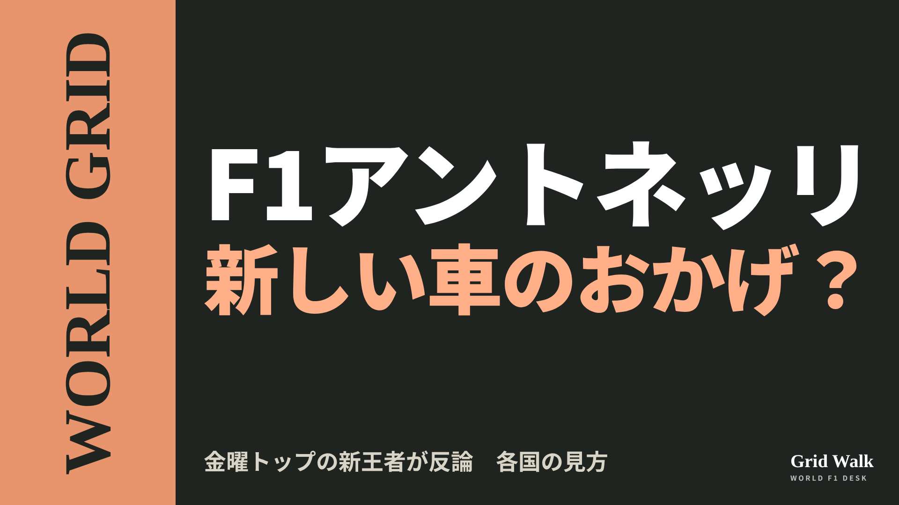<button class="cp dl" data-img="img/x_antonelli-new-cars-debate-20261107.png" data-name="x_antonelli-new-cars-debate-20261107.png">ダウンロード</button></li>
<li class="st"><div class="hd"><b>① noteをシェアするときの文</b></div><div class="bx" id="p3x0">新王者アントネッリ、サンパウロGPのFP2でトップ。ネットの「新しい車のおかげ」という声には「僕にとっても、とても大きな変化でした」。各国の伝え方をnoteにまとめました #F1jp #アントネッリ</div><button class="cp" data-plain="p3x0">コピー</button></li>
<li class="st"><div class="hd"><b>② ①への返信</b></div><div class="bx" id="p3x1">ほかの海外記事も読みたい方は、F1 Grid Walkへ。
https://f1gridwalk.github.io/lens/antonelli-new-cars-debate-20261107/?utm_source=x&amp;utm_campaign=antonelli-new-cars-debate-20261107</div><button class="cp" data-plain="p3x1">コピー</button></li>
<li class="st"><div class="hd"><b>③ ②への返信</b></div><div class="bx" id="p3x2">毎日の海外F1ニュースは、日本語でこちらにまとめています。
https://f1gridwalk.github.io/</div><button class="cp" data-plain="p3x2">コピー</button></li>
</ol></section><section class="part" id="p4"><h2><span class="tag">OFF GRID</span>ロズベルグ「100％僕のせいのときもあった」　フェラーリに足りないもの</h2><p class="sub">サイトに公開：07:16</p><ol class="steps">
<li class="st im"><div class="hd"><span class="no">1</span><b>見出し画像</b><em>画像</em></div>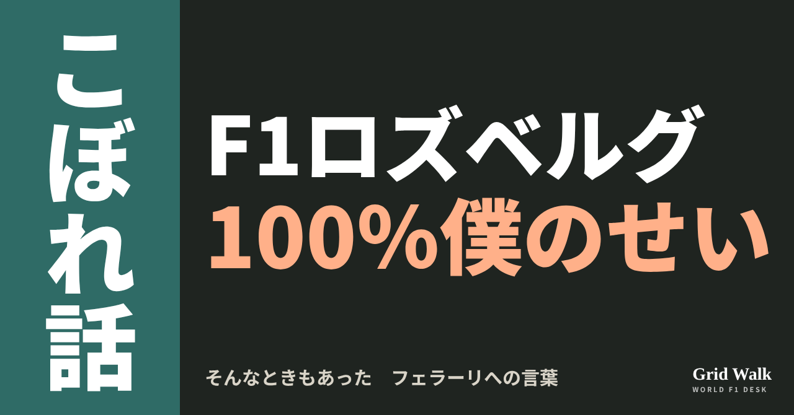<button class="cp dl" data-img="img/rosberg-ferrari-unclear-rules-20261107.png" data-name="rosberg-ferrari-unclear-rules-20261107_見出し画像.png">ダウンロード</button></li>
<li class="st"><div class="hd"><span class="no">2</span><b>タイトル</b></div><div class="bx" id="p4t">ロズベルグ「100％僕のせいのときもあった」　フェラーリに足りないもの</div><button class="cp" data-plain="p4t">タイトルをコピー</button></li>
<li class="st"><div class="hd"><span class="no">3</span><b>本文</b></div><div class="bx tall" id="p4r"><p>修理費は、2人で折半。ニコ・ロズベルグは、メルセデスでルイス・ハミルトンと組んでいたころ、その決まりで一度に36万ドルを払ったことがあるそうです。フェラーリのハミルトンとシャルル・ルクレールの争いをめぐるロズベルグの話を、ドイツのMotorsport-Totalが伝えました。</p><p>2014年と2016年の3回の接触の記録と、元の記事へのリンクはサイトで → <a href="https://f1gridwalk.github.io/lens/rosberg-ferrari-unclear-rules-20261107/?utm_source=note&amp;utm_campaign=rosberg-ferrari-unclear-rules-20261107">https://f1gridwalk.github.io/lens/rosberg-ferrari-unclear-rules-20261107/?utm_source=note&amp;utm_campaign=rosberg-ferrari-unclear-rules-20261107</a></p><h2>モナコ2016の「はっきりした線」</h2><p>11月1日のメキシコシティGPの1周目、首位を争うハミルトンとルクレールは、4コーナーで2台ともコース外へ。ルクレールには5秒加算。レースはマックス・フェルスタッペンが勝ちました（Crash.net／イギリス）。</p><p>記事によると、ロズベルグは、フェラーリはいまこの問題をうまく扱えていない、指示が十分にはっきりしていないからだ、と見ています。比べたのは、F1公式のポッドキャスト「Beyond the Grid」で振り返った2016年のモナコ。ロズベルグはタイトルを争うハミルトンを先に行かせ、首位のダニエル・リカルドを追わせました。</p><blockquote><p>「はっきりしています。チームが優勝を失いそうになったら、そのときは、ドライバーがタイトルを争うライバルとしてではなく、チームとして走らなければならない。そこはとても明確でした」（ロズベルグ、Motorsport-Total／ドイツ）</p></blockquote><p>その日のロズベルグは「バイザーがひどく曇って」いて、うまく走れなかったといいます。勝ったのはハミルトン、ロズベルグは7位でした（F1公式の結果）。</p><blockquote><p>「ものすごくつらかった。でも、指示が前もってはっきりしていれば、それほど悪いことではありません」（ロズベルグ、同）</p></blockquote><h2>「二度と起こさせない」のあとに2回</h2><p>ただ、メルセデスも完ぺきではなかったと、ロズベルグは認めています。2人は3回ぶつかりました。2014年ベルギー、2016年スペインとオーストリア。うち2回は、それでレースの勝利を失った、と記事は書いています。</p><p>2014年のスパでは2周目に接触し、ハミルトンはリタイア。優勝はリカルドでした（F1公式）。メルセデスのトト・ウォルフは当時、こう話しています。</p><blockquote><p>「ルールその1は、互いにぶつかるな、です」「二度と起きてはならないし、起こさせません」（ウォルフ、2014年、F1公式サイト／イギリス）</p></blockquote><p>それでも2016年のスペインでは、1周目に2台がそろってリタイアし、フェルスタッペンが初優勝。オーストリアでは最終周に接触し、ハミルトンが優勝、ロズベルグは10秒加算で4位でした（F1公式）。</p><p>冒頭の折半は、これ以上の事故を防ぐためにメルセデスが設けた決まりです（Motorsport-Total）。</p><blockquote><p>「だれがいつ悪いのか、すべての場合を決めておけるほど細かくはできません」「だから、100％彼のせいということは一度もなかった。でも、100％僕のせいということは、ときどきありました」（ロズベルグ、Motorsport-Total／ドイツ）</p></blockquote><h2>ラウダの「ほんの少しは」</h2><p>もめたあとの仲裁役は、チームの非常勤会長だったニキ・ラウダでした。</p><blockquote><p>「ラウダはよく間に入ってくれて、すばらしい仲裁役でした。僕ら2人とも、彼をとても尊敬していたからです」「彼は、僕らのそれぞれに、少なくともほんの少しは責任を引き受けさせるのが、とてもうまかった」（ロズベルグ、Motorsport-Total／ドイツ）</p></blockquote><blockquote><p>「『うん、わかった、その点は認めるよ。ドアを閉めるのが少し遅すぎたかもしれない』。するとルイスが『そうだね、芝の上でめちゃくちゃに攻めすぎた』とか、そんなことを言うんです」（同）</p></blockquote><p>編集部としては、話の芯は、争いをやめる線を先に引くことと、もめたあとに2人に少しずつ非を認めさせる人がいること、の2つだと見ています。</p><p><strong>チームメイト同士の争い。前もって引く線と、もめたあとの仲裁役。効くのはどちらだと思いますか？</strong></p><p>━━━━━━━━━━</p><p><strong>F1 Grid Walk では、世界のF1ニュースを毎日日本語でまとめています。</strong></p><p>海外の記事の要約を、毎日載せています。</p><p><a href="https://f1gridwalk.github.io/">https://f1gridwalk.github.io/</a></p><p>ほかの海外記事も読みたい方は、F1 Grid Walkへ。</p><p><a href="https://f1gridwalk.github.io/lens/rosberg-ferrari-unclear-rules-20261107/">https://f1gridwalk.github.io/lens/rosberg-ferrari-unclear-rules-20261107/</a></p><p>━━━━━━━━━━</p><p><a href="https://www.motorsport-total.com/formel-1/news/rosberg-kritisiert-ferrari-im-umgang-mit-hamilton-und-leclerc-26110614">出典：Motorsport-Total.com（ドイツ）</a></p><p><a href="https://www.crash.net/f1/news/1109272/1/charles-leclercs-controversial-mexico-gp-penalty-explained">出典：Crash.net（イギリス）</a></p><p><a href="https://www.formula1.com/en/latest/article/mercedes-unacceptable-clash-must-never-be-repeated.6ePMh2Le73eK3kHUdr7mbr">出典：F1公式サイト（イギリス）</a></p><p><a href="https://www.formula1.com/en/results/2014/races">出典：F1公式サイト（イギリス）</a></p><p><a href="https://www.formula1.com/en/latest/article/f1-mercedes-rosberg-hamilton-dramatic-moments.7yhFHvaNn4XdokW3njUaE2">出典：F1公式サイト（イギリス）</a></p><p><a href="https://www.formula1.com/en/latest/headlines/2016/5/verstappen-stuns-with-maiden-win-in-spain.html">出典：F1公式サイト（イギリス）</a></p><p><a href="https://www.formula1.com/en/results/2016/races/945/austria/race-result">出典：F1公式サイト（イギリス）</a></p><p><a href="https://www.formula1.com/en/results/2016/races/943/monaco/race-result">出典：F1公式サイト（イギリス）</a></p><p><a href="https://www.formula1.com/en/latest/article/coming-soon-formula-1s-first-ever-official-podcast.1SuIG0U77yuUQesO0AII0M">出典：F1公式サイト（イギリス）</a></p></div><button class="cp" data-rich="p4r">本文をコピー</button></li>
<li class="st"><div class="hd"><span class="no">4</span><b>ハッシュタグ</b></div><div class="bx" id="p4h">#F1 #F1jp #ロズベルグ #ハミルトン #ルクレール #フェラーリ #メルセデス #ニキラウダ #F1こぼれ話 #OFFGRID</div><button class="cp" data-plain="p4h">タグをコピー</button></li>
</ol><h3 class="xh">X</h3><ol class="steps">
<li class="st im"><div class="hd"><b>X用の画像</b><em>画像</em></div>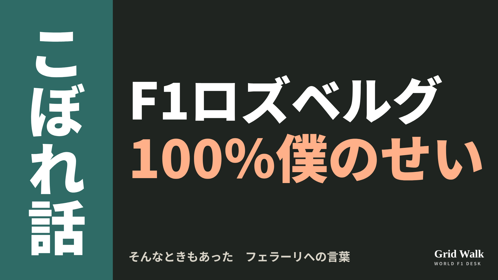<button class="cp dl" data-img="img/x_rosberg-ferrari-unclear-rules-20261107.png" data-name="x_rosberg-ferrari-unclear-rules-20261107.png">ダウンロード</button></li>
<li class="st"><div class="hd"><b>① noteをシェアするときの文</b></div><div class="bx" id="p4x0">修理費は2人で折半。ロズベルグはハミルトンと組んでいたころ、一度に36万ドルを払ったそうです。フェラーリのハミルトンとルクレールの争いを、モナコ2016と比べて語りました。noteにまとめました #F1jp #フェラーリ</div><button class="cp" data-plain="p4x0">コピー</button></li>
<li class="st"><div class="hd"><b>② ①への返信</b></div><div class="bx" id="p4x1">ほかの海外記事も読みたい方は、F1 Grid Walkへ。
https://f1gridwalk.github.io/lens/rosberg-ferrari-unclear-rules-20261107/?utm_source=x&amp;utm_campaign=rosberg-ferrari-unclear-rules-20261107</div><button class="cp" data-plain="p4x1">コピー</button></li>
<li class="st"><div class="hd"><b>③ ②への返信</b></div><div class="bx" id="p4x2">毎日の海外F1ニュースは、日本語でこちらにまとめています。
https://f1gridwalk.github.io/</div><button class="cp" data-plain="p4x2">コピー</button></li>
</ol></section><section class="part" id="p5"><h2><span class="tag">OFF GRID</span>アルピーヌ育成ミニ、FP1で7番手　レギュラーのコラピントより上</h2><p class="sub">サイトに公開：07:16</p><ol class="steps">
<li class="st im"><div class="hd"><span class="no">1</span><b>見出し画像</b><em>画像</em></div>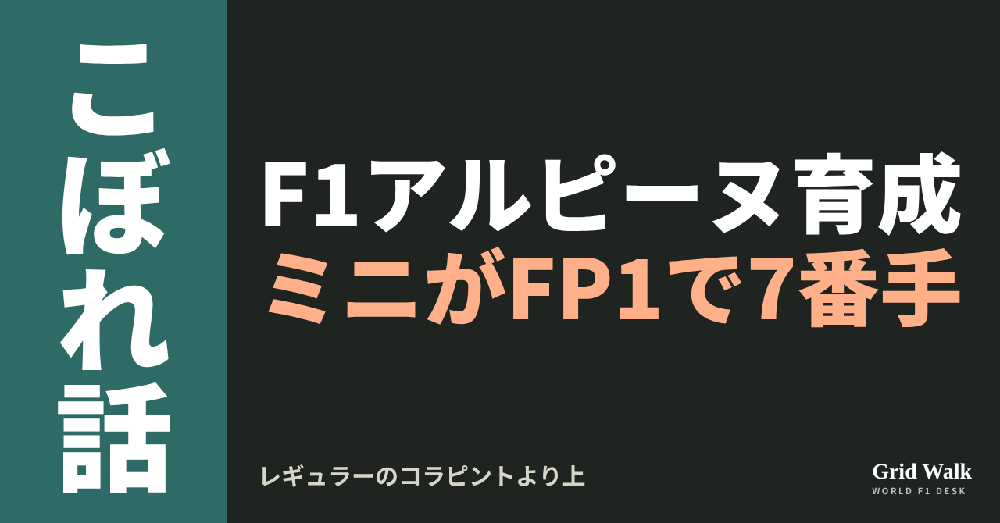<button class="cp dl" data-img="img/mini-fastest-rookie-20261107.png" data-name="mini-fastest-rookie-20261107_見出し画像.png">ダウンロード</button></li>
<li class="st"><div class="hd"><span class="no">2</span><b>タイトル</b></div><div class="bx" id="p5t">アルピーヌ育成ミニ、FP1で7番手　レギュラーのコラピントより上</div><button class="cp" data-plain="p5t">タイトルをコピー</button></li>
<li class="st"><div class="hd"><span class="no">3</span><b>本文</b></div><div class="bx tall" id="p5r"><p>サンパウロGPの金曜、FP1の結果表の7番手に、アルピーヌ育成のガブリエレ・ミニの名前がありました。ピエール・ガスリーの車を借りて走り、同じアルピーヌのレギュラー、フランコ・コラピント（9番手）を0.085秒上回りました。この日のFP1を走った、F1の決勝の経験がない7人の中でも、いちばん上の順位です。</p><p>F1の決勝の経験がない7人の順位の元の結果表と、ミニの言葉の出典へのリンクはサイトで → <a href="https://f1gridwalk.github.io/lens/mini-fastest-rookie-20261107/?utm_source=note&amp;utm_campaign=mini-fastest-rookie-20261107">https://f1gridwalk.github.io/lens/mini-fastest-rookie-20261107/?utm_source=note&amp;utm_campaign=mini-fastest-rookie-20261107</a></p><h2>トップから0.852秒の7番手</h2><p>Motorsport Weekの結果表では、トップはランド・ノリス（マクラーレン）の1分11秒717。ミニは0.852秒差の7番手で、コラピントは9番手でした。</p><p>イタリアのSiciliaMotoriによると、ミニのベストは1分12秒569で、27周を走りました。コラピントは1分12秒654で、34周です。</p><p>中身も違いました。SiciliaMotoriは、ミニは序盤、チームの空力の確認のために速さを抑えて走り、ミディアムタイヤで始めて、タイムを出しにいったのは後半だったと伝えています。後半にはソフトも使いました。コラピントは決勝のペースを中心に走ったといいます。編集部としては、この順位をそのまま2人の速さの差とは見ていません。</p><h2>F1の決勝の経験がない7人</h2><p>この日のFP1には、F1の決勝をまだ走ったことのないドライバーが7人いました。6人はチームがレギュラーを1人休ませて走らせたもので、多くはルーキーの金曜走行義務（ https://f1gridwalk.github.io/deep/rules/rookie-fp1/ ）のためです。残るハースのカマラは、外れたオコンに代わってこの週末のレースを任されています（ https://f1gridwalk.github.io/lens/camara-home-debut-20261105/ ）。結果表での7人の順位は次のとおりです。</p><p>7番手ミニ（アルピーヌ）、11番手レオナルド・フォルナローリ（マクラーレン）、17番手ルーク・ブラウニング（ウィリアムズ）、18番手ラファエル・カマラ（ハース）、20番手コルトン・ハータ（キャデラック）、21番手ディーノ・ベガノビッチ（フェラーリ）、22番手フレディ・スレーター（アウディ）。</p><p>ミニにとっては、2週続けてのFP1でした。アルゼンチンのCarburandoによると、1週間前のメキシコシティGPでは、コラピントの車で14番手でした。</p><p>このうち3人は、今季のF2で争っている間柄です。アメリカのRACERによると、5月のF2マイアミのフィーチャーレースでは、ミニがベガノビッチ、カマラとの3台の争いを制して、F2の初優勝を挙げました。RacingNews365が9月26日に載せたバクー後のF2のランキングでは、カマラが1位、ミニが4位、ベガノビッチが5位。そのランキングで先頭のカマラは、この日のFP1では18番手でした。</p><h2>「本当にうまくいった」</h2><p>ミニは走る前、アルピーヌ公式のプレビューでこう話していました。</p><blockquote><p>「2週続けてA526のハンドルを握れるのはうれしいです。今回はピエールの車です。先週のメキシコシティは、F1の公式セッションで走る初めての経験として、本当にすばらしいものでした。今週もその上に積み上げていけたらうれしいです」（ミニ、アルピーヌ公式／フランス）</p></blockquote><p>走り終えたあとの言葉は、SiciliaMotoriが伝えています。</p><blockquote><p>「今年2回目のセッションでしたが、本当にうまくいきました」（ミニ、SiciliaMotori／イタリア）</p></blockquote><p>名前を挙げてお礼を言った2人は、アルピーヌのフラビオ・ブリアトーレとスティーブ・ニールセンです（SiciliaMotori）。</p><blockquote><p>「フラビオ、スティーブ、そしてこの経験を実現させてくれたすべての人に、大きな感謝を」（ミニ、SiciliaMotori／イタリア）</p></blockquote><p>予定どおり、ガスリーはFP2から自分の車に戻りました。ミニの金曜は1時間で終わりましたが、7番手の記録は結果表に残っています。</p><p><strong>FP1で代わりに走った7人の中で、あなたが気になったのは誰ですか？</strong></p><p>━━━━━━━━━━</p><p><strong>F1 Grid Walk では、世界のF1ニュースを毎日日本語でまとめています。</strong></p><p>海外の記事の要約を、毎日載せています。</p><p><a href="https://f1gridwalk.github.io/">https://f1gridwalk.github.io/</a></p><p>ほかの海外記事も読みたい方は、F1 Grid Walkへ。</p><p><a href="https://f1gridwalk.github.io/lens/mini-fastest-rookie-20261107/">https://f1gridwalk.github.io/lens/mini-fastest-rookie-20261107/</a></p><p>━━━━━━━━━━</p><p><a href="https://www.motorsportweek.com/2026/11/06/f1-2026-sao-paulo-grand-prix-fp1-results/">出典：Motorsport Week（イギリス）</a></p><p><a href="https://www.siciliamotori.it/2026/11/06/gabriele-mini-settimo-fp1-brasile-alpine-colapinto/">出典：SiciliaMotori（イタリア）</a></p><p><a href="https://www.alpinef1.com/news/sao-paulo-grand-prix-preview">出典：アルピーヌ公式（フランス）</a></p><p><a href="https://www.carburando.com/formula-1/como-le-fue-a-gabriele-mini-en-la-fp1-del-gp-de-brasil-con-alpine-id200703">出典：Carburando（アルゼンチン）</a></p><p><a href="https://racer.com/2026/05/03/min-wins-three-car-fight-for-first-f2-victory-in-miami-feature-race">出典：RACER（アメリカ）</a></p><p><a href="https://racingnews365.com/2026-f2-championship-standings-after-baku-feature-race-2">出典：RacingNews365（オランダ）</a></p></div><button class="cp" data-rich="p5r">本文をコピー</button></li>
<li class="st"><div class="hd"><span class="no">4</span><b>ハッシュタグ</b></div><div class="bx" id="p5h">#F1 #F1jp #ガブリエレミニ #アルピーヌ #コラピント #サンパウロGP #FP1 #F1こぼれ話 #OFFGRID</div><button class="cp" data-plain="p5h">タグをコピー</button></li>
</ol><h3 class="xh">X</h3><ol class="steps">
<li class="st im"><div class="hd"><b>X用の画像</b><em>画像</em></div>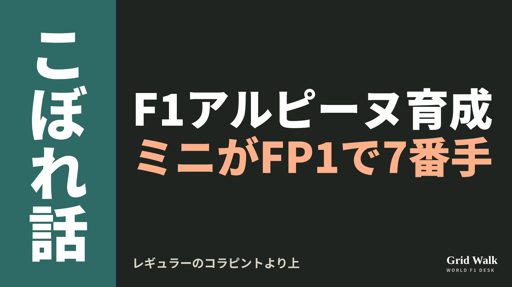<button class="cp dl" data-img="img/x_mini-fastest-rookie-20261107.png" data-name="x_mini-fastest-rookie-20261107.png">ダウンロード</button></li>
<li class="st"><div class="hd"><b>① noteをシェアするときの文</b></div><div class="bx" id="p5x0">アルピーヌ育成のガブリエレ・ミニが、サンパウロGPのFP1で7番手。ガスリーの車で、レギュラーのコラピントを0.085秒上回りました。決勝の経験がない7人の中でいちばん上です。noteにまとめました #F1jp #アルピーヌ</div><button class="cp" data-plain="p5x0">コピー</button></li>
<li class="st"><div class="hd"><b>② ①への返信</b></div><div class="bx" id="p5x1">ほかの海外記事も読みたい方は、F1 Grid Walkへ。
https://f1gridwalk.github.io/lens/mini-fastest-rookie-20261107/?utm_source=x&amp;utm_campaign=mini-fastest-rookie-20261107</div><button class="cp" data-plain="p5x1">コピー</button></li>
<li class="st"><div class="hd"><b>③ ②への返信</b></div><div class="bx" id="p5x2">毎日の海外F1ニュースは、日本語でこちらにまとめています。
https://f1gridwalk.github.io/</div><button class="cp" data-plain="p5x2">コピー</button></li>
</ol></section><section class="part" id="p6"><h2><span class="tag">WORLD GRID</span>ハミルトン「ありのままを謝るつもりは決してない」　各国はどう書いた？</h2><p class="sub">サイトに公開：07:16</p><ol class="steps">
<li class="st im"><div class="hd"><span class="no">1</span><b>見出し画像</b><em>画像</em></div>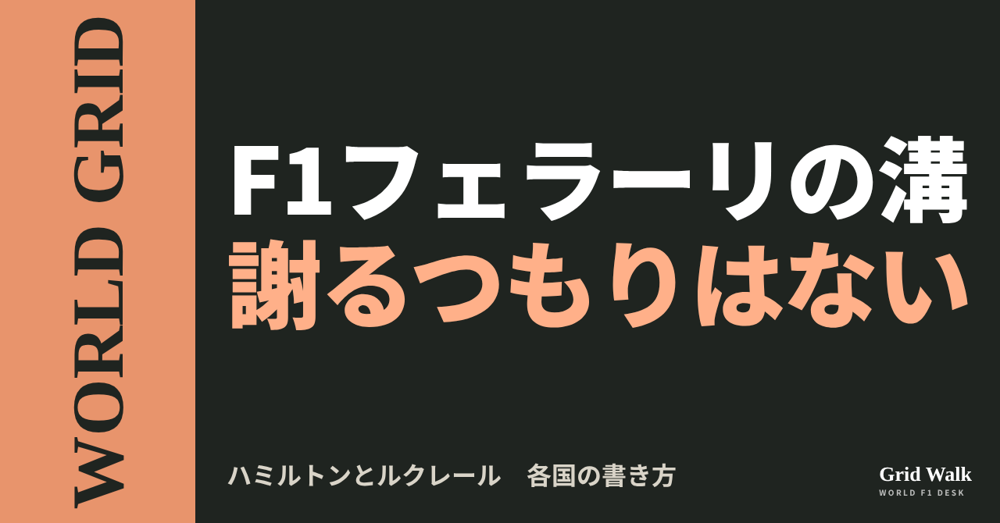<button class="cp dl" data-img="img/hamilton-leclerc-rift-20261107.png" data-name="hamilton-leclerc-rift-20261107_見出し画像.png">ダウンロード</button></li>
<li class="st"><div class="hd"><span class="no">2</span><b>タイトル</b></div><div class="bx" id="p6t">ハミルトン「ありのままを謝るつもりは決してない」　各国はどう書いた？</div><button class="cp" data-plain="p6t">タイトルをコピー</button></li>
<li class="st"><div class="hd"><span class="no">3</span><b>本文</b></div><div class="bx tall" id="p6r"><p>「自分らしく、ありのままでいることを、謝るつもりは決してない」。サンパウロGPを前にした11月5日（木、現地時間）の取材日で、ルイス・ハミルトン（フェラーリ）はこう話しました。メキシコシティGPの1周目、シャルル・ルクレールとの争いから4日。各国の書き方は、国ごとにきれいには分かれませんでした。</p><p>各国の報道の違いと、元の記事へのリンクはサイトで → <a href="https://f1gridwalk.github.io/lens/hamilton-leclerc-rift-20261107/?utm_source=note&amp;utm_campaign=hamilton-leclerc-rift-20261107">https://f1gridwalk.github.io/lens/hamilton-leclerc-rift-20261107/?utm_source=note&amp;utm_campaign=hamilton-leclerc-rift-20261107</a></p><h2>1周目の4コーナーと、無線</h2><p>ポールのハミルトンと3番手スタートのルクレールは、1周目の4コーナーで並び、2台ともコース外へ。F1公式によると、ルクレールは芝生を越えて前に出て、順位を返しませんでした。スチュワードは「2台とも速すぎる速度で4コーナーに進入した」とし、コース外で追い越しを終えたとして5秒の罰。ハミルトンも内側でコース外に出ていたこと、1周目の序盤だったことから、基準の10秒より軽くしています（PlanetF1、The Race）。</p><blockquote><p>「5秒ペナルティの問題は、彼がきれいな空気の中を走れること。ぼくらみたいにやりくりしなくていい」（ハミルトン、チーム無線／The Race〈イギリス〉）</p></blockquote><h2>木曜、ハミルトンは1人で</h2><p>ルクレールは木曜の取材日には出ていません。レース直後には「ある意味で、妥当なペナルティでした」と話していました（F1公式）。</p><p>ハミルトンは、チーム内のコース上の決まりをはっきりさせる話し合いが必要だという考えを変えず、ルクレールがほかのチームの相手より自分に激しく挑んでくるという見方も認めました（Motorsport-Total〈ドイツ〉）。</p><blockquote><p>「はい。僕にも皆さんと同じように見えています」「でもチームメイトを見れば、セバスチャンのときも同じでした。カルロスのときも同じでした」（ハミルトン、Motorsport-Total／ドイツ）</p></blockquote><blockquote><p>「黙らされるつもりはありません」「チームからも、何かを言うなとは言われていません」（同）</p></blockquote><p>Motorsport-Totalによると、フレデリック・バスール代表はレース後、2人と別々に話しました。背景には、メキシコでの出来事をチームの2000人のスタッフへの敬意を欠くものと受け止めたことがあるといいます。金曜には3人で話し合う予定と伝えられています（The Race、GPblog）。</p><h2>イタリアは「バスールの番」、スペインは割れる</h2><p>イタリアのOA Sportは「ハミルトン、またルクレールを指さす『ベッテルやサインツにも同じことをした』」と見出しに。英語の「同じ」が「同じことをした」になっています。motorsport.comイタリア版は「今度はバスールが片づける番」とし、FormulaCriticaは「マラネロを仕切るのはだれか？」と問いました。元フェラーリ代表のマウリツィオ・アリバベーネはSky Italiaで「決定的な瞬間に2人ともブレーキが遅すぎたが、ルイスにはコースにとどまる経験があった」と話しています（Nextgen-Auto〈フランス〉）。</p><p>イギリスのSky Sportsは、ルクレールがほかのライバルより激しく挑んでくるという話を見出しに。スペインでは、motor.esがレース翌日に「ハミルトン、ルクレールとフェラーリの問題を言い当てる」と書き、autonocionは木曜の発言を「反省するどころか、火に油を注いだ」と書きました。</p><p>ドイツのF1-Insider.comは、ハミルトンはフェラーリで好かれていないとするイタリアの記者の主張を、チーム内の支持が落ちたかは確かめられないと断ったうえで紹介しています（https://f1gridwalk.github.io/news/de-f1insider-ferrari-insider-hamilton/ ）。</p><h2>名前の出たサインツは</h2><blockquote><p>「正直に言うと、シャルルと過ごした時間や、争ったことには、わりといい思い出があります」「ぶつかったことは一度もありません。激しく争っただけです」（サインツ、Motorsport-Total／ドイツ）</p></blockquote><p>サインツによると、もめごとは「それでも、その日の夜のうちに、頭を冷やして電話をかけ合って解決していました」。</p><blockquote><p>「2人目にナンバー2のドライバーを置くか、こういう問題を起こす2人の良いドライバーを持つか、選ぶことになります」（同）</p></blockquote><p>編集部としては、「イタリアは厳しく、イギリスはハミルトン寄り」という分け方は、今回開いた記事には当てはまらなかったと見ています。イタリアは2人より代表の舵取りを問う記事が目立ち、スペインの中でも評価が割れていました。</p><p><strong>ハミルトンの言葉は「率直さ」か「火に油」か。あなたはどう読みましたか？</strong></p><p>━━━━━━━━━━</p><p><strong>F1 Grid Walk では、世界のF1ニュースを毎日日本語でまとめています。</strong></p><p>海外の記事の要約を、毎日載せています。</p><p><a href="https://f1gridwalk.github.io/">https://f1gridwalk.github.io/</a></p><p>ほかの海外記事も読みたい方は、F1 Grid Walkへ。</p><p><a href="https://f1gridwalk.github.io/lens/hamilton-leclerc-rift-20261107/">https://f1gridwalk.github.io/lens/hamilton-leclerc-rift-20261107/</a></p><p>━━━━━━━━━━</p><p><a href="https://www.formula1.com/en/latest/article/leclerc-concedes-he-deserved-penalty-over-hamilton-clash-in-mexico-city-gp.4rYJb2xww8myo1gtgBV5pV">出典：F1公式（イギリス）</a></p><p><a href="https://www.planetf1.com/news/fia-leclerc-penalty-hamilton-f1-2026-mexican-grand-prix-ferrari">出典：PlanetF1（イギリス）</a></p><p><a href="https://www.the-race.com/formula-1/fia-explains-controversial-leclerc-penalty-decision/">出典：The Race（イギリス）</a></p><p><a href="https://www.the-race.com/formula-1/ferrari-drivers-set-for-crunch-meeting-in-brazil/">出典：The Race（イギリス）</a></p><p><a href="https://www.skysports.com/f1/news/13608314/lewis-hamilton-ferrari-driver-says-team-mate-charles-leclerc-races-him-harder-than-other-f1-rivals">出典：Sky Sports（イギリス）</a></p><p><a href="https://www.gpblog.com/en/news/fred-vasseur-is-set-for-clear-the-air-talks-between-his-two-ferrari-drivers-in-sao-paulo-today">出典：GPblog（オランダ）</a></p><p><a href="https://www.oasport.it/2026/11/lewis-hamilton-punta-ancora-il-dito-contro-leclerc-ha-fatto-lo-stesso-con-vettel-e-sainz/amp/">出典：OA Sport（イタリア）</a></p><p><a href="https://it.motorsport.com/f1/news/ferrari-il-caso-hamilton-leclerc-arriva-a-interlagos-ora-tocca-a-vasseur-risolvere-la-questione/10871985/">出典：motorsport.com（イタリア）</a></p><p><a href="https://www.formulacritica.it/news/512451055110/dal-rosso-ferrari-al-rosso-inferno-il-passo-e-breve">出典：FormulaCritica（イタリア）</a></p><p><a href="https://motorsport.nextgen-auto.com/en/formula-1/new-dad-leclerc-skips-media-amid-ferrari-turmoil,213068.html">出典：Nextgen-Auto（フランス）</a></p><p><a href="https://www.motor.es/formula-1/charles-sainz-enzarzarse-hamilton-da-clavo-analizar-problema-leclerc-ferrari-2026117392.html">出典：motor.es（スペイン）</a></p><p><a href="https://www.autonocion.com/motornocion/ferrari-se-rompe-y-vasseur-cita-a-hamilton-y-a-leclerc/">出典：autonocion（スペイン）</a></p><p><a href="https://f1-insider.com/formel-1-ferrari-insider-hamilton-vorwuerfe-83588/">出典：F1-Insider.com（ドイツ）</a></p><p><a href="https://www.motorsport-total.com/formel-1/news/lewis-hamilton-bleibt-hart-werde-mich-niemals-dafuer-entschuldigen-26110515">出典：Motorsport-Total.com（ドイツ）</a></p><p><a href="https://www.motorsport-total.com/formel-1/news/carlos-sainz-betont-gute-erinnerungen-an-racing-gegen-charles-leclerc-26110602">出典：Motorsport-Total.com（ドイツ）</a></p></div><button class="cp" data-rich="p6r">本文をコピー</button></li>
<li class="st"><div class="hd"><span class="no">4</span><b>ハッシュタグ</b></div><div class="bx" id="p6h">#F1 #F1jp #ハミルトン #ルクレール #フェラーリ #バスール #サインツ #サンパウロGP #WORLDGRID #F1ニュース</div><button class="cp" data-plain="p6h">タグをコピー</button></li>
</ol><h3 class="xh">X</h3><ol class="steps">
<li class="st im"><div class="hd"><b>X用の画像</b><em>画像</em></div>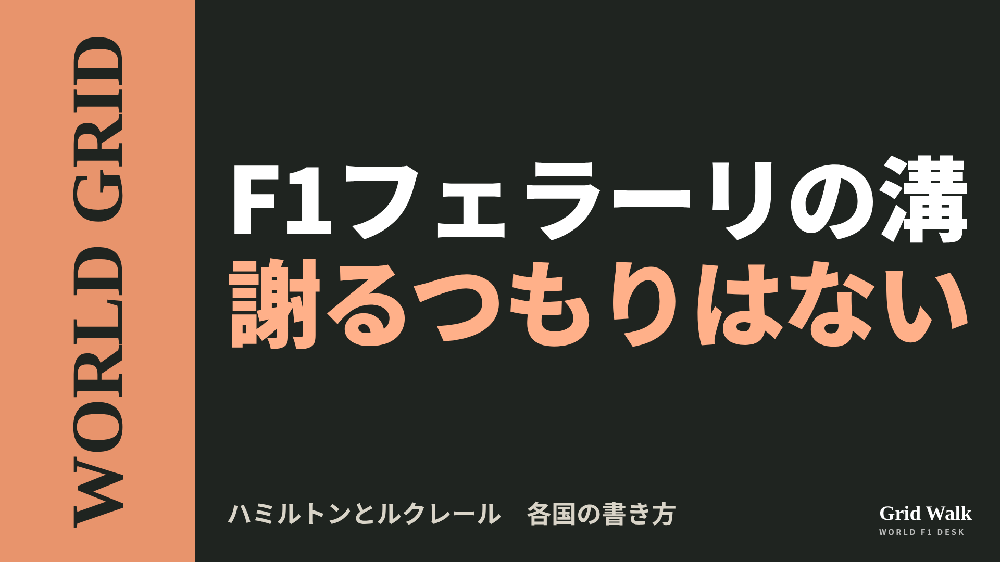<button class="cp dl" data-img="img/x_hamilton-leclerc-rift-20261107.png" data-name="x_hamilton-leclerc-rift-20261107.png">ダウンロード</button></li>
<li class="st"><div class="hd"><b>① noteをシェアするときの文</b></div><div class="bx" id="p6x0">「ありのままでいることを、謝るつもりは決してない」。メキシコの1周目から4日、ハミルトンはこう話しました。ルクレールとの争いを、各国はどう書いたか。noteにまとめました #F1jp #フェラーリ</div><button class="cp" data-plain="p6x0">コピー</button></li>
<li class="st"><div class="hd"><b>② ①への返信</b></div><div class="bx" id="p6x1">ほかの海外記事も読みたい方は、F1 Grid Walkへ。
https://f1gridwalk.github.io/lens/hamilton-leclerc-rift-20261107/?utm_source=x&amp;utm_campaign=hamilton-leclerc-rift-20261107</div><button class="cp" data-plain="p6x1">コピー</button></li>
<li class="st"><div class="hd"><b>③ ②への返信</b></div><div class="bx" id="p6x2">毎日の海外F1ニュースは、日本語でこちらにまとめています。
https://f1gridwalk.github.io/</div><button class="cp" data-plain="p6x2">コピー</button></li>
</ol></section><section class="part" id="p7"><h2><span class="tag">OFF GRID</span>ガスリー「何も重圧じゃない」　マルコを知る男、初表彰台のブラジルへ</h2><p class="sub">サイトに公開：07:16</p><ol class="steps">
<li class="st im"><div class="hd"><span class="no">1</span><b>見出し画像</b><em>画像</em></div>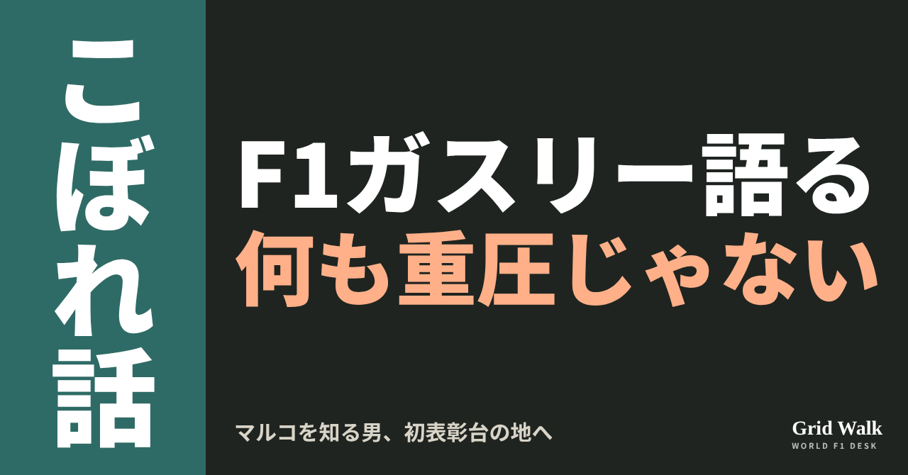<button class="cp dl" data-img="img/gasly-marko-nothing-scares-20261107.png" data-name="gasly-marko-nothing-scares-20261107_見出し画像.png">ダウンロード</button></li>
<li class="st"><div class="hd"><span class="no">2</span><b>タイトル</b></div><div class="bx" id="p7t">ガスリー「何も重圧じゃない」　マルコを知る男、初表彰台のブラジルへ</div><button class="cp" data-plain="p7t">タイトルをコピー</button></li>
<li class="st"><div class="hd"><span class="no">3</span><b>本文</b></div><div class="bx tall" id="p7r"><p>サンパウロGPを前にした木曜、チームメイトのフランコ・コラピントを応援するアルゼンチンのファンについて聞かれたピエール・ガスリーは、レッドブルの元顧問ヘルムート・マルコの名前を出しました。</p><p>ドイツとスペインの元の記事、F1公式の結果へのリンクはサイトで → <a href="https://f1gridwalk.github.io/lens/gasly-marko-nothing-scares-20261107/?utm_source=note&amp;utm_campaign=gasly-marko-nothing-scares-20261107">https://f1gridwalk.github.io/lens/gasly-marko-nothing-scares-20261107/?utm_source=note&amp;utm_campaign=gasly-marko-nothing-scares-20261107</a></p><blockquote><p>「F1に来て10年になるけど、一度ヘルムート・マルコを相手にしたら、ほかのことはもう何も重圧じゃない」（ガスリー、Motorsport-Total／ドイツ）</p></blockquote><h2>「応援ははっきり感じる」</h2><p>Motorsport-Totalは、当面アルゼンチンでGPが開かれないため、多くのファンがサンパウロに来ると書き、熱心なあまり行き過ぎることがあって、矛先がチームやチームメイトに向いたこともあると見ています。Motorsport.com スペイン語版によると、今年はSNSでの嫌がらせにアルピーヌが反対の声明を出し、コラピントもほかのドライバーやチームの人を攻撃しないようファンに呼びかけました。</p><blockquote><p>「アルゼンチンの人は世界中にいると思う。ブラジルは近いから、たぶんもっと多いだろうね」（ガスリー、Motorsport.com スペイン語版／スペイン）</p></blockquote><blockquote><p>「応援ははっきり感じるよ」「自分の仕事が何かはよく分かっているし、それに集中している」「それがF1のいいところで、こういう場面からはすごくいいエネルギーをもらえる。あおられて、それにコースでしっかり答えを返すのが好きなんだ」（ガスリー、Motorsport-Total／ドイツ）</p></blockquote><h2>マルコのもとで味わった2019年</h2><p>F1公式によると、マルコは20年にわたりレッドブルでどのドライバーをF1に上げるかを助言し、ガスリーを含む20人のF1昇格を見届けて、2025年の終わりに退きました。</p><p>Motorsport-Totalは、マルコをドライバーへの重圧を大きく高めることのできた厳しい人と紹介し、ガスリーもそれを味わったと書いています。2019年、ガスリーは夏休み明けにレッドブルからトロロッソへ戻され、席はアレクサンダー・アルボンに移りました。F1公式が自信への「大きな打撃」と書いたこの年、ガスリーはブラジルで2位に入り、初表彰台に「人生で最高の日だ」と話しました。</p><h2>朝6時の検査と、雨の予報</h2><p>F1公式の結果では、ガスリーは2019年から昨年までの6回のブラジルで5回入賞しています（2019年2位、2021年7位、2022年14位、2023年7位、2024年3位、2025年10位）。2024年はエステバン・オコンが2位で、2台の表彰台でした。この数字を聞いたガスリーは、こう話しました。</p><blockquote><p>「今ので1日が救われたよ。知らなかったんだ！今朝は6時にドーピング検査で起こされて、機嫌は最高とはいえなかった。ひどい夜だったからね」「でも、すごい数字だし、ここが本当に好きなんだ。F1で表彰台に2回上がれたのはここだけ。2019年の初めての表彰台と、2024年の雨の表彰台だ。日曜もまた雨になりそうだから、すごく楽しみだよ！」（ガスリー、Motorsport-Total／ドイツ）</p></blockquote><p>前戦メキシコでは、2人ともレース後に黄旗での違反の罰を受け、入賞圏から外れました（くわしくは DEEP GRID #38 https://f1gridwalk.github.io/deep/alpine-yellow-flags/ ）。アルピーヌの展望でガスリーはサンパウロから「もっと多くのポイントを持ち帰る」ことを目指すと話し、速さについてはこう求めています。</p><blockquote><p>「メキシコではポールまで0.6秒くらい足りなかった。だから今はチームに丸1秒を求めているんだ」（ガスリー、Motorsport-Total／ドイツ）</p></blockquote><p><strong>雨の予報のインテルラゴスで、ガスリーの3回目の表彰台はあると思いますか？</strong></p><p>━━━━━━━━━━</p><p><strong>F1 Grid Walk では、世界のF1ニュースを毎日日本語でまとめています。</strong></p><p>海外の記事の要約を、毎日載せています。</p><p><a href="https://f1gridwalk.github.io/">https://f1gridwalk.github.io/</a></p><p>ほかの海外記事も読みたい方は、F1 Grid Walkへ。</p><p><a href="https://f1gridwalk.github.io/lens/gasly-marko-nothing-scares-20261107/">https://f1gridwalk.github.io/lens/gasly-marko-nothing-scares-20261107/</a></p><p>━━━━━━━━━━</p><p><a href="https://www.motorsport-total.com/formel-1/news/pierre-gasly-wenn-du-helmut-marko-ueberlebt-hast-haut-dich-nichts-mehr-um-26110603">出典：Motorsport-Total.com（ドイツ）</a></p><p><a href="https://es.motorsport.com/f1/news/gasly-responde-sobre-presion-fans-argentinos-colapinto-brasil/10871756">出典：Motorsport.com スペイン語版（スペイン）</a></p><p><a href="https://www.alpinef1.com/news/sao-paulo-grand-prix-preview">出典：BWT Alpine F1 Team 公式（イギリス）</a></p><p><a href="https://www.alpinef1.com/news/mexico-city-grand-prix-recap">出典：BWT Alpine F1 Team 公式（イギリス）</a></p><p><a href="https://www.formula1.com/en/latest/article/dr-helmut-marko-to-leave-red-bull-motorsport-advisor-role.28NBdIbMJvsnKdRRkAWBVR">出典：Formula 1 公式（イギリス）</a></p><p><a href="https://www.formula1.com/en/latest/article/this-is-the-best-day-of-my-life-says-gasly-after-stunning-brazil-podium.1zPKbxMsbW7H1YKoRs5JsK">出典：Formula 1 公式（イギリス）</a></p><p><a href="https://www.formula1.com/en/results/2019/races/1019/brazil/race-result">出典：Formula 1 公式（イギリス）</a></p><p><a href="https://www.formula1.com/en/results/2021/races/1104/brazil/race-result">出典：Formula 1 公式（イギリス）</a></p><p><a href="https://www.formula1.com/en/results/2022/races/1137/brazil/race-result">出典：Formula 1 公式（イギリス）</a></p><p><a href="https://www.formula1.com/en/results/2023/races/1224/brazil/race-result">出典：Formula 1 公式（イギリス）</a></p><p><a href="https://www.formula1.com/en/results/2024/races/1249/brazil/race-result">出典：Formula 1 公式（イギリス）</a></p><p><a href="https://www.formula1.com/en/results/2025/races/1273/brazil/race-result">出典：Formula 1 公式（イギリス）</a></p></div><button class="cp" data-rich="p7r">本文をコピー</button></li>
<li class="st"><div class="hd"><span class="no">4</span><b>ハッシュタグ</b></div><div class="bx" id="p7h">#F1 #F1jp #ガスリー #マルコ #アルピーヌ #コラピント #サンパウロGP #インテルラゴス #F1こぼれ話 #OFFGRID</div><button class="cp" data-plain="p7h">タグをコピー</button></li>
</ol><h3 class="xh">X</h3><ol class="steps">
<li class="st im"><div class="hd"><b>X用の画像</b><em>画像</em></div>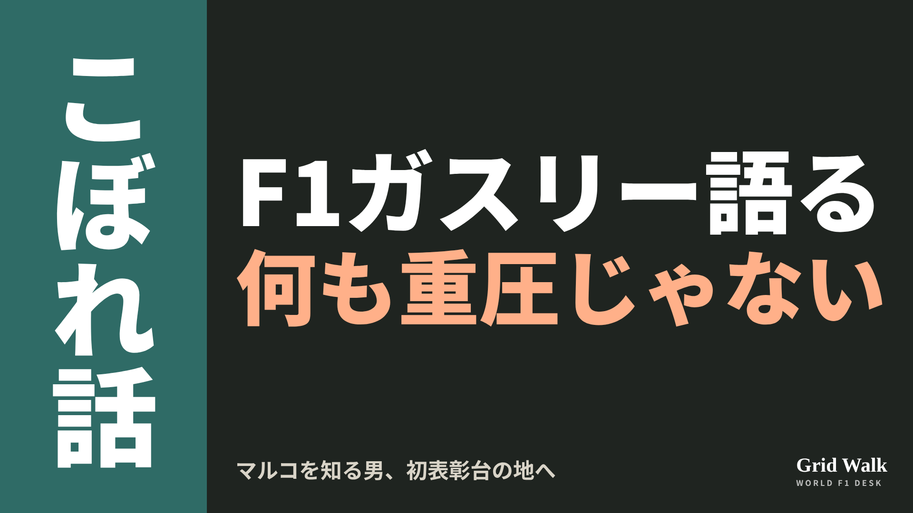<button class="cp dl" data-img="img/x_gasly-marko-nothing-scares-20261107.png" data-name="x_gasly-marko-nothing-scares-20261107.png">ダウンロード</button></li>
<li class="st"><div class="hd"><b>① noteをシェアするときの文</b></div><div class="bx" id="p7x0">「一度ヘルムート・マルコを相手にしたら、ほかのことはもう何も重圧じゃない」。コラピントを応援するアルゼンチンのファンについて聞かれたガスリーの答えです。noteにまとめました #F1jp #ガスリー</div><button class="cp" data-plain="p7x0">コピー</button></li>
<li class="st"><div class="hd"><b>② ①への返信</b></div><div class="bx" id="p7x1">ほかの海外記事も読みたい方は、F1 Grid Walkへ。
https://f1gridwalk.github.io/lens/gasly-marko-nothing-scares-20261107/?utm_source=x&amp;utm_campaign=gasly-marko-nothing-scares-20261107</div><button class="cp" data-plain="p7x1">コピー</button></li>
<li class="st"><div class="hd"><b>③ ②への返信</b></div><div class="bx" id="p7x2">毎日の海外F1ニュースは、日本語でこちらにまとめています。
https://f1gridwalk.github.io/</div><button class="cp" data-plain="p7x2">コピー</button></li>
</ol></section><section class="part" id="p8"><h2><span class="tag">OFF GRID</span>ピアストリ、10秒加算に「反論は難しい」　でも「当てはめにくい」</h2><p class="sub">サイトに公開：07:16</p><ol class="steps">
<li class="st im"><div class="hd"><span class="no">1</span><b>見出し画像</b><em>画像</em></div>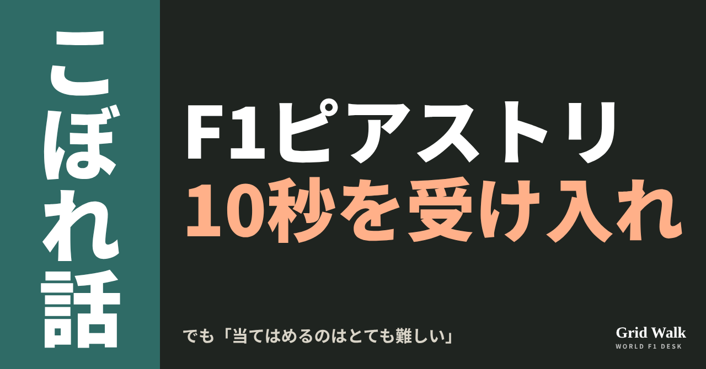<button class="cp dl" data-img="img/piastri-accepts-penalty-20261107.png" data-name="piastri-accepts-penalty-20261107_見出し画像.png">ダウンロード</button></li>
<li class="st"><div class="hd"><span class="no">2</span><b>タイトル</b></div><div class="bx" id="p8t">ピアストリ、10秒加算に「反論は難しい」　でも「当てはめにくい」</div><button class="cp" data-plain="p8t">タイトルをコピー</button></li>
<li class="st"><div class="hd"><span class="no">3</span><b>本文</b></div><div class="bx tall" id="p8r"><p>メキシコシティGPの終盤、オスカー・ピアストリ（マクラーレン）がアービッド・リンドブラッド（レーシングブルズ）の外側から1コーナーで仕掛け、2台は接触。リンドブラッドの車は宙に浮いて壁に当たり、リタイアしました。ピアストリには10秒加算。その罰を本人は受け入れましたが、ひとこと付け加えています（ドイツのMotorsport-Total）。</p><p>スチュワードの判断の中身と、追い抜きのガイドラインの解説、元の記事へのリンクはサイトで → <a href="https://f1gridwalk.github.io/lens/piastri-accepts-penalty-20261107/?utm_source=note&amp;utm_campaign=piastri-accepts-penalty-20261107">https://f1gridwalk.github.io/lens/piastri-accepts-penalty-20261107/?utm_source=note&amp;utm_campaign=piastri-accepts-penalty-20261107</a></p><h2>「罰に反論するのは難しい」</h2><p>Motorsport-Totalによると、この罰でピアストリは7位を失い、接触のあとのセーフティカーで隊列が詰まっていたため、13位まで下がりました。F1公式の正式結果でも13位、0点です。ピアストリは、相手の守り方も認めています。</p><blockquote><p>「ガイドラインを見れば、この罰に反論するのは難しいです。でも、メキシコのあのコーナーの組み合わせこそ、ガイドラインを当てはめるのがとても難しい場所だと思います」（ピアストリ、Motorsport-Total／ドイツ）</p></blockquote><blockquote><p>「アービッドはとても強く守ったと思います。ガイドラインに照らせば、彼にはそうする権利がありました。一方で、僕にも、引こうとしたところまでは、仕掛けをやり切ろうとする権利がありました。その引こうとした瞬間が、まさに接触の瞬間でした」（ピアストリ、Motorsport-Total／ドイツ）</p></blockquote><p>リンドブラッドはレース後、映像を全部見るまでは詳しく話したくないとしつつ、こう語りました。</p><blockquote><p>「彼とは本当の意味で戦っていました。彼は10周以上、僕の後ろから抜けずにいました。あの順位のために戦うと決めていたし、外側から簡単に抜かせるつもりはありませんでした」（リンドブラッド、F1公式サイト／イギリス）</p></blockquote><h2>スチュワードは、左に寄れば避けられたと判断</h2><p>The RaceやPlanetF1（イギリス）が伝えたスチュワードの判断はこうです。ピアストリは外側から抜こうとしたが「一度も完全には並んでいなかった」ので、コーナーの権利はなかった。リンドブラッドはブレーキを緩めて守りつつ、外側に余地を残した。「そうする義務はない」のに、です。</p><p>そして、ピアストリが1コーナーのあともっと左に寄っていれば、接触は避けられた、「たとえ2コーナーの手前でコースを外れることになっても」と結論づけました。ピアストリの次のことばは、この一文に答えているようにも読めます。</p><blockquote><p>「コーナーはどれも少しずつ違うし、コーナーの並び方となればなおさらです。それに、事故を避ける唯一の手がコースをショートカットすることだとしたら、いい立場に置かれるとは言えません。間違いなく難しい問題です」（ピアストリ、Motorsport-Total／ドイツ）</p></blockquote><p>なお、ハースの平川亮は13位でチェッカーを受け、ほかの車への罰で繰り上がって正式結果10位・1点でした（詳しくは https://f1gridwalk.github.io/lens/hirakawa-first-point-20261102/ ）。</p><h2>そもそも「ガイドライン」とは</h2><p>ここでいうガイドラインは、FIAの「ドライビング・スタンダード・ガイドライン」。スチュワードが追い抜きを判断する目安で、FIAは、これは「ガイドラインであり、規則ではない」と強調しています（Crash.net／イギリス）。</p><p>Crash.netによると、外側から抜く車が余地をもらうには、エイペックスで前輪の車軸が相手の前輪の車軸より前にあること。内側からなら、エイペックスの手前とエイペックスで、前輪の車軸が少なくとも相手のミラーに並んでいること。2026年版では、シケインやS字について、コーナーの並び全体も見て判断する、という一文が加わりました（The Race／イギリス。ルール辞典 https://f1gridwalk.github.io/deep/rules/overtaking-guidelines/ ）。</p><p>編集部としては、ピアストリの疑問は、コーナーが続く場所で「並んでいたか」をどの時点で測るのか、という点にあると見ています。</p><p><strong>コーナーが続く場所での追い抜き。「並んでいたか」は、どこで測るのがいいと思いますか？</strong></p><p>━━━━━━━━━━</p><p><strong>F1 Grid Walk では、世界のF1ニュースを毎日日本語でまとめています。</strong></p><p>海外の記事の要約を、毎日載せています。</p><p><a href="https://f1gridwalk.github.io/">https://f1gridwalk.github.io/</a></p><p>ほかの海外記事も読みたい方は、F1 Grid Walkへ。</p><p><a href="https://f1gridwalk.github.io/lens/piastri-accepts-penalty-20261107/">https://f1gridwalk.github.io/lens/piastri-accepts-penalty-20261107/</a></p><p>━━━━━━━━━━</p><p><a href="https://www.motorsport-total.com/formel-1/news/oscar-piastri-akzeptiert-strafe-aber-richtlinien-schwierig-umzusetzen-26110517">出典：Motorsport-Total.com（ドイツ）</a></p><p><a href="https://the-race.com/formula-1/piastri-punished-for-lindblad-collision">出典：The Race（イギリス）</a></p><p><a href="https://www.planetf1.com/news/fia-oscar-piastri-penalty-f1-2026-mexican-grand-prix">出典：PlanetF1（イギリス）</a></p><p><a href="https://www.formula1.com/en/latest/article/we-were-in-a-genuine-fight-lindblad-offers-verdict-on-piastri-collision-in-mexico-city-grand-prix.30FzCcOAR3jR8jti3SjN2e">出典：F1公式サイト（イギリス）</a></p><p><a href="https://www.formula1.com/en/results/2026/races/1298/mexico/race-result">出典：F1公式サイト（イギリス）</a></p><p><a href="https://www.fia.com/system/files/decision-document/2026_mexico_city_grand_prix_-_final_race_classification.pdf">出典：FIA（フランス）</a></p><p><a href="https://www.crash.net/f1/news/1090812/1/what-you-need-know-about-f1s-tweaked-penalty-and-driving-standards">出典：Crash.net（イギリス）</a></p><p><a href="https://www.the-race.com/formula-1/f1-2026-penalty-driving-guidelines-changes/">出典：The Race（イギリス）</a></p></div><button class="cp" data-rich="p8r">本文をコピー</button></li>
<li class="st"><div class="hd"><span class="no">4</span><b>ハッシュタグ</b></div><div class="bx" id="p8h">#F1 #F1jp #ピアストリ #マクラーレン #リンドブラッド #メキシコシティGP #サンパウロGP #ペナルティ #F1こぼれ話 #OFFGRID</div><button class="cp" data-plain="p8h">タグをコピー</button></li>
</ol><h3 class="xh">X</h3><ol class="steps">
<li class="st im"><div class="hd"><b>X用の画像</b><em>画像</em></div>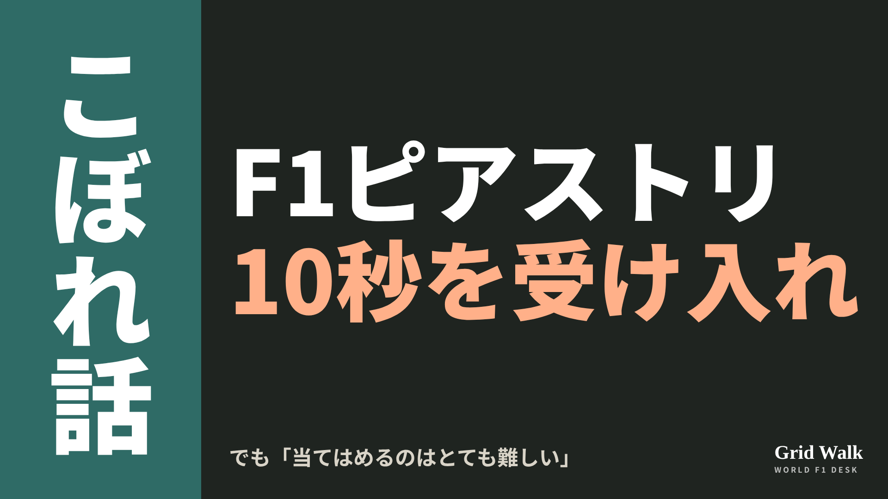<button class="cp dl" data-img="img/x_piastri-accepts-penalty-20261107.png" data-name="x_piastri-accepts-penalty-20261107.png">ダウンロード</button></li>
<li class="st"><div class="hd"><b>① noteをシェアするときの文</b></div><div class="bx" id="p8x0">メキシコでリンドブラッドと接触し10秒加算、13位で0点のピアストリ。「この罰に反論するのは難しい」と受け入れつつ、「当てはめるのがとても難しい場所」とも。noteにまとめました #F1jp #マクラーレン</div><button class="cp" data-plain="p8x0">コピー</button></li>
<li class="st"><div class="hd"><b>② ①への返信</b></div><div class="bx" id="p8x1">ほかの海外記事も読みたい方は、F1 Grid Walkへ。
https://f1gridwalk.github.io/lens/piastri-accepts-penalty-20261107/?utm_source=x&amp;utm_campaign=piastri-accepts-penalty-20261107</div><button class="cp" data-plain="p8x1">コピー</button></li>
<li class="st"><div class="hd"><b>③ ②への返信</b></div><div class="bx" id="p8x2">毎日の海外F1ニュースは、日本語でこちらにまとめています。
https://f1gridwalk.github.io/</div><button class="cp" data-plain="p8x2">コピー</button></li>
</ol></section><section class="part" id="p9"><h2><span class="tag">WORLD GRID</span>ベアマン対カマラを各国はどう比べた？　言葉、タイム、フェラーリの席</h2><p class="sub">サイトに公開：07:16</p><ol class="steps">
<li class="st im"><div class="hd"><span class="no">1</span><b>見出し画像</b><em>画像</em></div>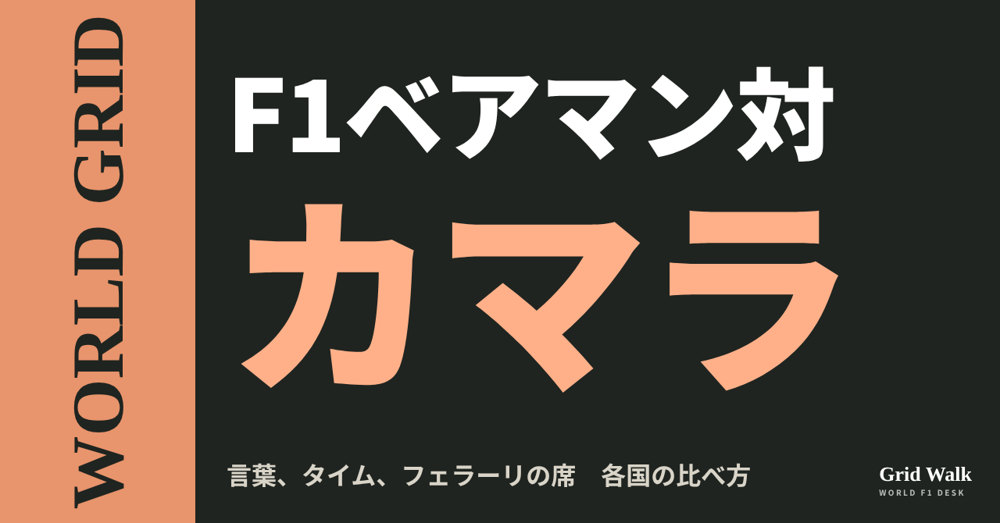<button class="cp dl" data-img="img/bearman-camara-ferrari-academy-20261107.png" data-name="bearman-camara-ferrari-academy-20261107_見出し画像.png">ダウンロード</button></li>
<li class="st"><div class="hd"><span class="no">2</span><b>タイトル</b></div><div class="bx" id="p9t">ベアマン対カマラを各国はどう比べた？　言葉、タイム、フェラーリの席</div><button class="cp" data-plain="p9t">タイトルをコピー</button></li>
<li class="st"><div class="hd"><span class="no">3</span><b>本文</b></div><div class="bx tall" id="p9r"><p>サンパウロGPで、ハースはオリバー・ベアマンの隣にラファエル・カマラを乗せます。2人はどちらもフェラーリの育成ドライバーです。ドイツのMotorsport-Totalは11月5日、「フェラーリの席をめぐる直接対決？」という見出しで2人を並べました。同じ2人を、ブラジルはテストのタイムで、イギリスとイタリアは次のフェラーリの空席で比べてきました。</p><p>各国の見出しの違いと、元の記事へのリンクはサイトで → <a href="https://f1gridwalk.github.io/lens/bearman-camara-ferrari-academy-20261107/?utm_source=note&amp;utm_campaign=bearman-camara-ferrari-academy-20261107">https://f1gridwalk.github.io/lens/bearman-camara-ferrari-academy-20261107/?utm_source=note&amp;utm_campaign=bearman-camara-ferrari-academy-20261107</a></p><h2>ドイツ：本人たちの言葉</h2><p>Motorsport-Totalによると、ベアマンは強い同僚が来ることを歓迎しています（要約：https://f1gridwalk.github.io/news/de-motorsporttotal-bearman-camara-ferrari-duel/ ）。</p><blockquote><p>「正直に言って、本気で僕を押してくれるチームメートができるのが楽しみです」（オリバー・ベアマン、Motorsport-Total／ドイツ）</p></blockquote><p>ベアマンは、カマラは「非常に強い競争相手」になるとも話しています。自分の成長については「大きな、大きな一歩でした」と振り返り、今季の結果が伸びないのは今の車にその競争力がないからだ、という見方を示しました。</p><p>地元でF1デビューするカマラは、周りの声についてこう話しています。</p><blockquote><p>「人が何を言おうと、外で何が起きようと、それが僕にとって本当の問題になったことは一度もありません」「この週末は、本当に楽しもうと思っています」（ラファエル・カマラ、Motorsport-Total／ドイツ）</p></blockquote><p>記事は、2027年にハースのレギュラーになるカマラにとって、今週末は来季の先取りだと書いています。もう1台に誰が乗るかは正式には決まっていないものの、ベアマンとチームが最後の契約の壁を越えられれば、ベアマンになると見てよい、という書き方です。</p><h2>ブラジル：見出しは「ベアマンを上回る」</h2><p>Estadão Conteúdoの配信記事（O Liberal掲載）は9月4日、「F2：ラファ・カマラがモンツァでポール、2027年のハースの席争いでベアマンを上回る」と見出しを立てました。本文では、カマラが上回ったのはポルティマオでのハースのテストでの「現レギュラーのオリバー・ベアマンが出した基準」で、ベアマンとの差は書かれていません。</p><p>Motorsport-Totalは同じテストについて、小松礼雄代表がそこでカマラに感心したとされ、ベアマンはタイムについていくのに苦労した、と伝えています。ブラジルの見出しはカマラを主語に「上回る」と書き、ドイツの記事はベアマンを主語に「苦労した」と書きました。</p><h2>イギリスとイタリア：次のフェラーリの席</h2><p>イギリスのAutosportは10月23日、「なぜ今、次のフェラーリの空席はベアマン対カマラなのか」と見出しを立てました。ベアマンの2027年のハース残留はまだ確定していないものの、「形式的なことだとみられている」と書いています。</p><p>イタリアのSky Sportは10月15日、来年のハースには「FDA出身のドライバーが2人」になるとし、同じ車での2人の走りはマラネロで注目され、「より強い印象を残した方が、ルイス・ハミルトンの席を継ぐことになるだろう」と書きました。同じ日のAutomoto.itは、ベアマンを「すでに決まっている」チームメートと書いています。</p><p>ただし、ハースは11月6日の時点で、ベアマンの2027年をまだ発表していません。事情は10月27日のコラム（https://f1gridwalk.github.io/lens/bearman-haas-contract-20261027/ ）で取り上げました。</p><h2>3日違いの2人</h2><p>フェラーリの発表（2021年11月8日）によると、2人は2021年10月にマラネロで開かれた選考会「FDAスカウティング・ワールドファイナル」を経て、そろって育成入りしました。カマラは2005年5月5日、ベアマンは同じ年の5月8日生まれ。誕生日は3日違いです。ただ、同じシリーズで戦ったことはない、とMotorsport-Totalは書いています。</p><p>先にF1に来たのはベアマンでした。2024年3月のサウジアラビアGPで、虫垂炎のカルロス・サインツの代わりにフェラーリから走り、7位で6点を取りました（F1公式。くわしくはSTORY：https://f1gridwalk.github.io/topics/bearman-question-of-timing/ ）。カマラは11月6日時点で、F2で207点の首位。レッドブル育成のニコラ・ツォロフが200点で続いています（FIA）。</p><p>来季も2人が同じ車に乗るかは、ベアマンの発表を待つことになります。チームメートとして初めて並ぶのが、今週末のインテルラゴスです。</p><p><strong>同じ選考会でフェラーリに選ばれた、3日違いの2人。あなたはどの物差しで比べますか？</strong></p><p>━━━━━━━━━━</p><p><strong>F1 Grid Walk では、世界のF1ニュースを毎日日本語でまとめています。</strong></p><p>海外の記事の要約を、毎日載せています。</p><p><a href="https://f1gridwalk.github.io/">https://f1gridwalk.github.io/</a></p><p>ほかの海外記事も読みたい方は、F1 Grid Walkへ。</p><p><a href="https://f1gridwalk.github.io/lens/bearman-camara-ferrari-academy-20261107/">https://f1gridwalk.github.io/lens/bearman-camara-ferrari-academy-20261107/</a></p><p>━━━━━━━━━━</p><p><a href="https://www.motorsport-total.com/formel-1/news/oliver-bearman-rafael-camara-direktes-duell-um-ein-ferrari-cockpit-26110519">出典：Motorsport-Total.com（ドイツ）</a></p><p><a href="https://www.oliberal.com/esportes/f-2-rafa-camara-e-pole-em-monza-e-supera-bearman-na-corrida-por-vaga-na-haas-em-2027-1.1164830">出典：Estadão Conteúdo（O Liberal掲載）（ブラジル）</a></p><p><a href="https://www.autosport.com/f1/news/why-its-now-bearman-versus-camara-for-the-next-ferrari-vacancy/10867288/">出典：Autosport（イギリス）</a></p><p><a href="https://sport.sky.it/formula-1/2026/10/15/f1-camara-haas-mondiale-2027">出典：Sky Sport（イタリア）</a></p><p><a href="https://www.automoto.it/formula1/haas-ufficiale-rafael-camara-2027-bearman-fornaroli.html">出典：Automoto.it（イタリア）</a></p><p><a href="https://ferrari.com/en-EN/fda/articles/oliver-bearman-and-rafael-camara-join-the-ferrari-driver-academy">出典：Ferrari 公式（FDA）（イタリア）</a></p><p><a href="https://www.formula1.com/en/latest/article/breaking-sainz-ruled-out-of-saudi-arabian-gp-with-appendicitis-as-f2-racer.2JzIonRBBDEjEb2AlkdVfl">出典：F1公式サイト（イギリス）</a></p><p><a href="https://www.formula1.com/en/latest/article/highlights-watch-the-action-from-the-saudi-arabian-grand-prix-as-verstappen.2ISU80gK2MkPASrIveoSsj">出典：F1公式サイト（イギリス）</a></p><p><a href="https://api.fia.com/events/formula-2-championship/season-2026/standings">出典：FIA（国際）</a></p></div><button class="cp" data-rich="p9r">本文をコピー</button></li>
<li class="st"><div class="hd"><span class="no">4</span><b>ハッシュタグ</b></div><div class="bx" id="p9h">#F1 #F1jp #ベアマン #カマラ #ハース #フェラーリ #サンパウロGP #WORLDGRID #F1ニュース</div><button class="cp" data-plain="p9h">タグをコピー</button></li>
</ol><h3 class="xh">X</h3><ol class="steps">
<li class="st im"><div class="hd"><b>X用の画像</b><em>画像</em></div>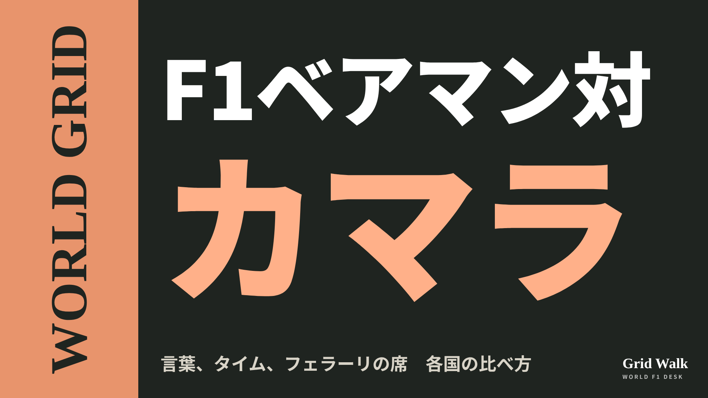<button class="cp dl" data-img="img/x_bearman-camara-ferrari-academy-20261107.png" data-name="x_bearman-camara-ferrari-academy-20261107.png">ダウンロード</button></li>
<li class="st"><div class="hd"><b>① noteをシェアするときの文</b></div><div class="bx" id="p9x0">ハースで同僚になるベアマンとカマラは、どちらもフェラーリの育成ドライバー。ドイツは本人の言葉、ブラジルはタイム、イギリスとイタリアは次のフェラーリの席で比べました。noteにまとめました #F1jp #ハース</div><button class="cp" data-plain="p9x0">コピー</button></li>
<li class="st"><div class="hd"><b>② ①への返信</b></div><div class="bx" id="p9x1">ほかの海外記事も読みたい方は、F1 Grid Walkへ。
https://f1gridwalk.github.io/lens/bearman-camara-ferrari-academy-20261107/?utm_source=x&amp;utm_campaign=bearman-camara-ferrari-academy-20261107</div><button class="cp" data-plain="p9x1">コピー</button></li>
<li class="st"><div class="hd"><b>③ ②への返信</b></div><div class="bx" id="p9x2">毎日の海外F1ニュースは、日本語でこちらにまとめています。
https://f1gridwalk.github.io/</div><button class="cp" data-plain="p9x2">コピー</button></li>
</ol></section><section class="part" id="p10"><h2><span class="tag">OFF GRID</span>フェルスタッペン「2021年は逆だった」　ブラジルのブーイングが歓声に</h2><p class="sub">サイトに公開：07:16</p><ol class="steps">
<li class="st im"><div class="hd"><span class="no">1</span><b>見出し画像</b><em>画像</em></div>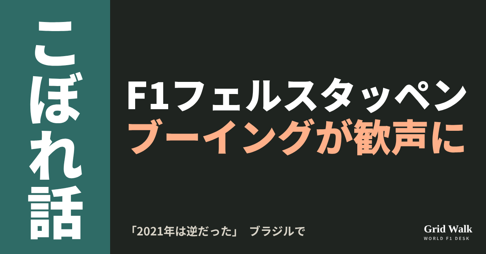<button class="cp dl" data-img="img/verstappen-brazil-cheers-20261107.png" data-name="verstappen-brazil-cheers-20261107_見出し画像.png">ダウンロード</button></li>
<li class="st"><div class="hd"><span class="no">2</span><b>タイトル</b></div><div class="bx" id="p10t">フェルスタッペン「2021年は逆だった」　ブラジルのブーイングが歓声に</div><button class="cp" data-plain="p10t">タイトルをコピー</button></li>
<li class="st"><div class="hd"><span class="no">3</span><b>本文</b></div><div class="bx tall" id="p10r"><p>昨年のサンパウロGP。勝ったランド・ノリスが表彰台に上がるとブラジルの観客からブーイングが起き、歓声はピットレーンから3位まで上がったマックス・フェルスタッペンに向いた、とオランダのGPFansは伝えています。本人はViaplayにこう話しました。</p><p>オランダとブラジルの元の記事、FIAの会見の記録、F1公式の結果へのリンクはサイトで → <a href="https://f1gridwalk.github.io/lens/verstappen-brazil-cheers-20261107/?utm_source=note&amp;utm_campaign=verstappen-brazil-cheers-20261107">https://f1gridwalk.github.io/lens/verstappen-brazil-cheers-20261107/?utm_source=note&amp;utm_campaign=verstappen-brazil-cheers-20261107</a></p><blockquote><p>「ここ2、3年で、かなり良くなったと言わないといけないね」「2021年は逆だったけど、いまは問題ないよ」（フェルスタッペン、Viaplay／オランダ、GPFans オランダ語版より）</p></blockquote><p>GPFansによると、以前ブーイングを受けていたのはむしろ本人のほうで、2021年はルイス・ハミルトンとタイトルを激しく争っていた年でした。何が変わったのか。手がかりを3つたどります。</p><h2>2016年、雨のインテルラゴスで「拍手」</h2><p>1つ目は10年前です。F1公式によると、2016年の雨のブラジルGPで、フェルスタッペンはウエットタイヤへの交換で14番手まで落ち、最後の16周で3位まで追い上げました。エスタード通信の記事を載せたブラジルの新聞ジョルナル・ド・コメルシオは、見出しに「インテルラゴスで拍手を浴びる」と入れました。</p><blockquote><p>「レースラインとは違うラインを選ばないといけなかった。前が見えるのは、それしか方法がなかった」（フェルスタッペン、2016年、エスタード通信／ブラジル）</p></blockquote><p>2024年には、FIAによると17番グリッドから優勝しました（2つのレースの流れは DEEP GRID #25 https://f1gridwalk.github.io/deep/interlagos-chaos/ ）。</p><h2>バスコ・ダ・ガマと「リーグ全体」</h2><p>2つ目はサッカーです。ブラジルのガゼタ・エスポルチーバによると、フェルスタッペンは2023年の終わりの配信で、バスコ・ダ・ガマを応援していると話しました。</p><p>一方、11月5日（木）の会見で、ブラジルのUOLの記者に好きなクラブを聞かれると、こう答えました。</p><blockquote><p>「まず、もう大きな間違いがひとつある。サッカーとは呼べない。フットボールだ」「いまは言うことに気をつけないとね。リーグ全体を応援しているよ。うん、たぶんそれがいちばんよくて、いちばん安全な答えだ」（フェルスタッペン、FIA公式の会見記録）</p></blockquote><h2>ボルトレートとの友情</h2><p>3つ目は、地元ブラジルのガブリエル・ボルトレートです。ブラジルのLANCE!によると、始まりは2016年、ボルトレートがレッドブルに上がったばかりのフェルスタッペンに写真をお願いしたことでした。今年2月に同紙が伝えた発言です。</p><blockquote><p>「ボルトレートとは特にいい関係だ。シミュレーターのレースで同じチームで走ってきたから」「それに、以前、F3とF2で少し彼を手助けした」（フェルスタッペン、LANCE!／ブラジル）</p></blockquote><p>2016年の言葉とこの言葉は、ポルトガル語の記事から編集部が訳しました。昨年のサンパウロGPの前にブラジルでの人気を聞かれたときは、「ガビはすごくいい友達」と話し、こう続けました。</p><blockquote><p>「去年（2024年）は、表彰台で少し違う感じがした。でも、僕のふるまいが変わったからじゃない。僕はずっと同じだから、たぶん見方が変わったんだろう。ここに来るのは、どのみちずっと大好きだったしね」（フェルスタッペン、GPblog／オランダ）</p></blockquote><p>編集部としては、インテルラゴスで積み重ねた走りにボルトレートとの友情が加わり、観客の見方が少しずつ変わったと見ています。ただ本人は、11月5日の会見で、セナの名前がとりわけ呼ばれる理由を聞かれた流れで、こうも話しました。</p><blockquote><p>「正直に言うと、僕も（人とつながることは）あまり気にしていない。勝つのが好きだから。勝つためにここにいる。小さいころからの夢なんだ」（フェルスタッペン、FIA公式の会見記録）</p></blockquote><p><strong>ブラジルの観客を変えたのは、雨の走りか、ボルトレートとの友情か、それとも見る側の変化か。どう思いますか？</strong></p><p>━━━━━━━━━━</p><p><strong>F1 Grid Walk では、世界のF1ニュースを毎日日本語でまとめています。</strong></p><p>海外の記事の要約を、毎日載せています。</p><p><a href="https://f1gridwalk.github.io/">https://f1gridwalk.github.io/</a></p><p>ほかの海外記事も読みたい方は、F1 Grid Walkへ。</p><p><a href="https://f1gridwalk.github.io/lens/verstappen-brazil-cheers-20261107/">https://f1gridwalk.github.io/lens/verstappen-brazil-cheers-20261107/</a></p><p>━━━━━━━━━━</p><p><a href="https://www.gpfans.com/nl/f1-nieuws/1067536/verstappen-over-boegeroep-norris-in-brazilie-in-2021-was-het-andersom/">出典：GPFans オランダ語版（オランダ）</a></p><p><a href="https://www.fia.com/news/f1-2026-sao-paulo-grand-prix-thursday-press-conference-transcript">出典：FIA 公式（国際）</a></p><p><a href="https://www.jornaldocomercio.com/_conteudo/2016/11/esportes/531288-verstappen-mostra-estilo-arrojado-chega-em-3-e-arranca-aplausos-em-interlagos.html">出典：Jornal do Comércio（エスタード通信）（ブラジル）</a></p><p><a href="https://www.gazetaesportiva.com/?p=3584570">出典：Gazeta Esportiva（ブラジル）</a></p><p><a href="https://www.lance.com.br/formula-1/max-verstappen-revela-torcida-por-podio-de-gabriel-bortoleto-na-f1.html">出典：LANCE!（ブラジル）</a></p><p><a href="https://www.gpblog.com/en/news/verstappens-bond-with-bortoleto-softens-brazils-view-of-the-champion">出典：GPblog（オランダ）</a></p><p><a href="https://www.formula1.com/en/latest/article/verstappen-third-felt-like-victory-after-late-charge.1GhCTtgIgPIE3xcaEsDnkb">出典：Formula 1 公式（イギリス）</a></p><p><a href="https://fia.com/node/54423">出典：FIA 公式（国際）</a></p><p><a href="https://www.formula1.com/en/results/2021/races/1104/brazil/race-result">出典：Formula 1 公式（イギリス）</a></p><p><a href="https://www.formula1.com/en/results/2024/races/1249/brazil/race-result">出典：Formula 1 公式（イギリス）</a></p><p><a href="https://www.formula1.com/en/results/2025/races/1273/brazil/race-result">出典：Formula 1 公式（イギリス）</a></p></div><button class="cp" data-rich="p10r">本文をコピー</button></li>
<li class="st"><div class="hd"><span class="no">4</span><b>ハッシュタグ</b></div><div class="bx" id="p10h">#F1 #F1jp #フェルスタッペン #ボルトレート #レッドブル #サンパウロGP #インテルラゴス #F1こぼれ話 #OFFGRID</div><button class="cp" data-plain="p10h">タグをコピー</button></li>
</ol><h3 class="xh">X</h3><ol class="steps">
<li class="st im"><div class="hd"><b>X用の画像</b><em>画像</em></div>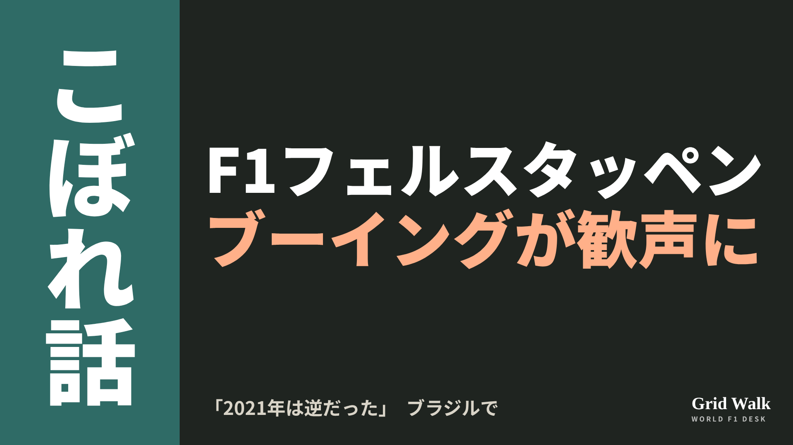<button class="cp dl" data-img="img/x_verstappen-brazil-cheers-20261107.png" data-name="x_verstappen-brazil-cheers-20261107.png">ダウンロード</button></li>
<li class="st"><div class="hd"><b>① noteをシェアするときの文</b></div><div class="bx" id="p10x0">「2021年は逆だったけど、いまは問題ないよ」。かつてブラジルでブーイングを受けたフェルスタッペンに、いまは歓声。何が変わったのか、手がかりを3つたどりました。noteにまとめました #F1jp #フェルスタッペン</div><button class="cp" data-plain="p10x0">コピー</button></li>
<li class="st"><div class="hd"><b>② ①への返信</b></div><div class="bx" id="p10x1">ほかの海外記事も読みたい方は、F1 Grid Walkへ。
https://f1gridwalk.github.io/lens/verstappen-brazil-cheers-20261107/?utm_source=x&amp;utm_campaign=verstappen-brazil-cheers-20261107</div><button class="cp" data-plain="p10x1">コピー</button></li>
<li class="st"><div class="hd"><b>③ ②への返信</b></div><div class="bx" id="p10x2">毎日の海外F1ニュースは、日本語でこちらにまとめています。
https://f1gridwalk.github.io/</div><button class="cp" data-plain="p10x2">コピー</button></li>
</ol></section><section class="part" id="p11"><h2><span class="tag">OFF GRID</span>アウディF1、サンパウロの歩道の模様で走る　今季3つ目の特別カラー</h2><p class="sub">サイトに公開：07:16</p><ol class="steps">
<li class="st im"><div class="hd"><span class="no">1</span><b>見出し画像</b><em>画像</em></div>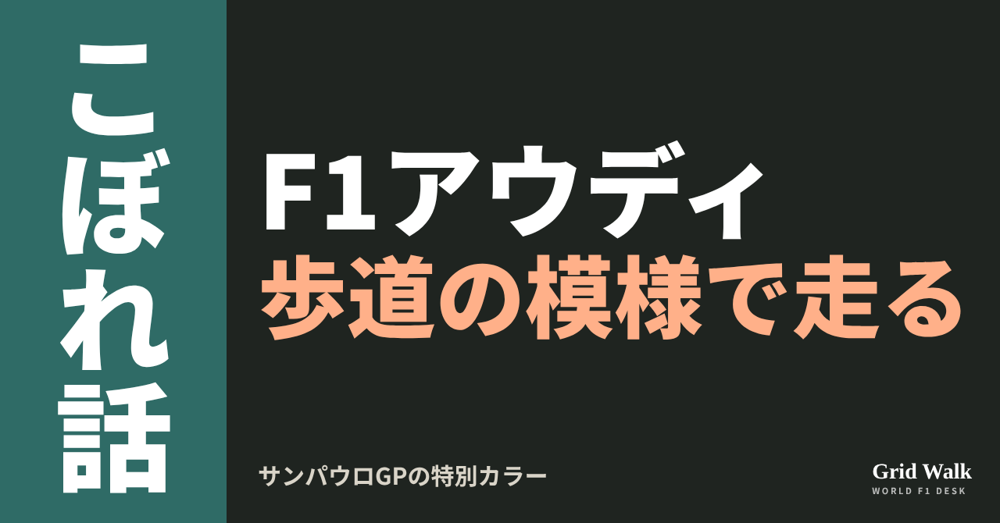<button class="cp dl" data-img="img/audi-sao-paulo-livery-20261107.png" data-name="audi-sao-paulo-livery-20261107_見出し画像.png">ダウンロード</button></li>
<li class="st"><div class="hd"><span class="no">2</span><b>タイトル</b></div><div class="bx" id="p11t">アウディF1、サンパウロの歩道の模様で走る　今季3つ目の特別カラー</div><button class="cp" data-plain="p11t">タイトルをコピー</button></li>
<li class="st"><div class="hd"><span class="no">3</span><b>本文</b></div><div class="bx tall" id="p11r"><p>今週末のサンパウロGP（11月6〜8日）、アウディの2台はいつもと違う姿で走ります。緑と黄色の車体に入るのは、サンパウロの歩道に敷かれた幾何学模様。地元ブラジルのガブリエル・ボルトレートのホームレースに合わせた特別カラーです。</p><p>モナコとシンガポールの特別カラーの記事と、元の発表記事へのリンクはサイトで → <a href="https://f1gridwalk.github.io/lens/audi-sao-paulo-livery-20261107/?utm_source=note&amp;utm_campaign=audi-sao-paulo-livery-20261107">https://f1gridwalk.github.io/lens/audi-sao-paulo-livery-20261107/?utm_source=note&amp;utm_campaign=audi-sao-paulo-livery-20261107</a></p><h2>模様の元はサンパウロの歩道</h2><p>ブラジルのGrande Prêmioによると、アウディは水曜日（11月4日）に、ボルトレートの地元レースのための特別カラーを発表しました。デザインしたのは、チーム名にも入っているタイトルパートナーのレボリュート（Revolut）です。</p><p>土台は「ピゾ・パウリスタ（Piso Paulista）」。アウディ公式サイトによると、この模様はサンパウロ州の形をなぞっています。Grande Prêmioによると、1960年代にブラジルのデザイナー、ミルテス・ベルナルデスが考えたもので、車体には州の形が小さくいくつも並びます。</p><p>色は緑が中心で、差し色が黄色。黄色はブラジル国旗のもう一つの色を拾ったものだと、Grande Prêmioは書いています（アウディ公式サイトの写真の説明では「濃い緑と金」）。同じ模様は、ボルトレートとニコ・ヒュルケンベルグのレーシングスーツ、ピットクルーの服、ガレージの装飾にも入ります。</p><h2>ふだんは踏んで通る模様が、車の上に</h2><p>アウディ公式サイトは、ひとつの名所ではなく街そのものを題材にしたと説明しています。歩道の模様はたいていの人が踏んで通り過ぎるものですが、車の上ではあらためて目を向けられる、という狙いです。</p><blockquote><p>「サンパウロには見間違えようのない個性がある。このレースに持ち込むすべてに、それを通わせたかった」（アウディのステファノ・バッティストン最高ブランド・コマーシャル責任者、Motorsport Week／イギリス）</p></blockquote><p>模様は、車より先にお披露目されていました。10月には同じ企画として、アディダスの服「Sampa Soul」と、レボリュートのサンパウロ柄のカードが発表されています。ブラジルのVrumによると、ドライバーのシャツには歩道の模様が入り、襟と袖口にはブラジル国旗を思わせる青と黄色の線が入ります。ボルトレートはこう話していました。</p><blockquote><p>「サンパウロは僕の家です。ここで育ち、F1で走るという夢もここで生まれました」（ボルトレート、Vrum／ブラジル）</p></blockquote><blockquote><p>「歩道の模様は街の通りの一部です。それを僕たちのシャツやレボリュートのカードで見ると、すごく個人的なものに感じます」（ボルトレート、Vrum／ブラジル）</p></blockquote><h2>モナコ、シンガポールに続く3つ目</h2><p>Grande Prêmioによると、アウディの今季の特別カラーはこれで3つ目です。6月のモナコGPでは、RacingNews365によると、1930年代後半にアウトウニオン（のちのアウディにつながる）で走ったタツィオ・ヌヴォラーリに敬意を表したデザインでした。</p><p>10月のシンガポールGPは、F1公式サイトによると、いつものチタニウムシルバーグレーを現地向けに変え、サイドポッドとリアウイングにプラナカンの伝統模様を入れたもの。昼から夕暮れへ移る街の光が着想で、アウディにとってF1で初めてのナイトレースを記念したデザインでした（サイトのニュース要約：https://f1gridwalk.github.io/news/de-formel1-audi-singapore-livery/ ）。</p><p>モナコは自分たちの歴史、シンガポールは街の光、サンパウロは街の足もと。3つのうち、ドライバーの地元レースのためのものはサンパウロだけです。中継では、車体に散らばる小さなサンパウロ州の形を探してみてください。</p><p><strong>アウディの今季3つの特別カラー、あなたはどれがいちばん好きですか？</strong></p><p>━━━━━━━━━━</p><p><strong>F1 Grid Walk では、世界のF1ニュースを毎日日本語でまとめています。</strong></p><p>海外の記事の要約を、毎日載せています。</p><p><a href="https://f1gridwalk.github.io/">https://f1gridwalk.github.io/</a></p><p>ほかの海外記事も読みたい方は、F1 Grid Walkへ。</p><p><a href="https://f1gridwalk.github.io/lens/audi-sao-paulo-livery-20261107/">https://f1gridwalk.github.io/lens/audi-sao-paulo-livery-20261107/</a></p><p>━━━━━━━━━━</p><p><a href="https://grandepremio.com/en/f1/audi-unveils-green-and-yellow-f1-livery-for-bortoletos-home-race-in-sao-paulo/">出典：Grande Prêmio（ブラジル）</a></p><p><a href="https://www.motorsportweek.com/2026/11/05/audi-reveals-one-off-livery-for-f1-sao-paulo-gp/">出典：Motorsport Week（イギリス）</a></p><p><a href="https://speedcafe.com/f1-news-2026-sao-paulo-grand-prix-brazil-brazillian-audi-livery-special-gallery-gabriel-bortoleto-themee/">出典：Speedcafe（オーストラリア）</a></p><p><a href="https://www.audif1.com/en/races/2026/sao-paulo-grand-prix/special-livery-sao-paulo">出典：アウディF1公式（ドイツ）</a></p><p><a href="https://www.vrum.com.br/aceleradas/2026/10/7525650-audi-e-gabriel-bortoleto-revelam-colecao-especial-para-gp-do-brasil.html">出典：Vrum（ブラジル）</a></p><p><a href="https://racingnews365.com/audi-pay-homage-to-motorsport-icon-with-monaco-gp-livery">出典：RacingNews365（オランダ）</a></p><p><a href="https://www.formula1.com/en/latest/article/gallery-audi-unveil-special-livery-for-singapore-grand-prix.5Z07QWFA7vVqCPC1jb6AIq">出典：F1公式（イギリス）</a></p></div><button class="cp" data-rich="p11r">本文をコピー</button></li>
<li class="st"><div class="hd"><span class="no">4</span><b>ハッシュタグ</b></div><div class="bx" id="p11h">#F1 #F1jp #アウディ #ボルトレート #ヒュルケンベルグ #サンパウロGP #特別カラー #F1こぼれ話 #OFFGRID</div><button class="cp" data-plain="p11h">タグをコピー</button></li>
</ol><h3 class="xh">X</h3><ol class="steps">
<li class="st im"><div class="hd"><b>X用の画像</b><em>画像</em></div>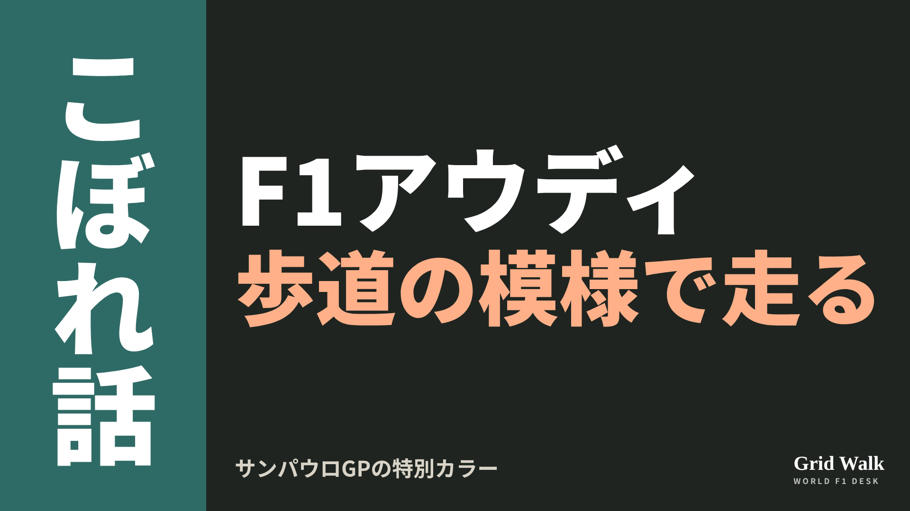<button class="cp dl" data-img="img/x_audi-sao-paulo-livery-20261107.png" data-name="x_audi-sao-paulo-livery-20261107.png">ダウンロード</button></li>
<li class="st"><div class="hd"><b>① noteをシェアするときの文</b></div><div class="bx" id="p11x0">アウディの2台が、サンパウロの歩道の模様「ピゾ・パウリスタ」をまとって走ります。地元ボルトレートのホームレースに合わせた特別カラーです。noteにまとめました #F1jp #アウディ</div><button class="cp" data-plain="p11x0">コピー</button></li>
<li class="st"><div class="hd"><b>② ①への返信</b></div><div class="bx" id="p11x1">ほかの海外記事も読みたい方は、F1 Grid Walkへ。
https://f1gridwalk.github.io/lens/audi-sao-paulo-livery-20261107/?utm_source=x&amp;utm_campaign=audi-sao-paulo-livery-20261107</div><button class="cp" data-plain="p11x1">コピー</button></li>
<li class="st"><div class="hd"><b>③ ②への返信</b></div><div class="bx" id="p11x2">毎日の海外F1ニュースは、日本語でこちらにまとめています。
https://f1gridwalk.github.io/</div><button class="cp" data-plain="p11x2">コピー</button></li>
</ol></section><section class="part" id="p12"><h2><span class="tag">OFF GRID</span>ローソン「こんな影響が出るとは」　フェルスタッペンとの接触を振り返る</h2><p class="sub">サイトに公開：07:16</p><ol class="steps">
<li class="st im"><div class="hd"><span class="no">1</span><b>見出し画像</b><em>画像</em></div>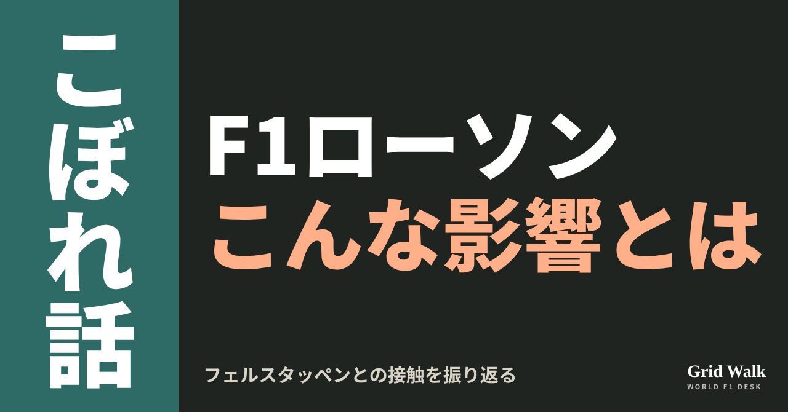<button class="cp dl" data-img="img/lawson-verstappen-underestimated-20261107.png" data-name="lawson-verstappen-underestimated-20261107_見出し画像.png">ダウンロード</button></li>
<li class="st"><div class="hd"><span class="no">2</span><b>タイトル</b></div><div class="bx" id="p12t">ローソン「こんな影響が出るとは」　フェルスタッペンとの接触を振り返る</div><button class="cp" data-plain="p12t">タイトルをコピー</button></li>
<li class="st"><div class="hd"><span class="no">3</span><b>本文</b></div><div class="bx tall" id="p12r"><p>「フェルスタッペンとやり合った影響を、ローソンは甘く見ていた」。ドイツのMotorsport-Totalは、サンパウロGPを前に、リアム・ローソン（レーシングブルズ）の記事にこんな見出しを付けました。ただ「甘く見ていた」は記事の言い回しで、本人が口にしたのは「こんな影響が出るとは思っていなかった」という言葉です。</p><p>元の記事へのリンクと、FP2の裁定や予選失格の解説はサイトで → <a href="https://f1gridwalk.github.io/lens/lawson-verstappen-underestimated-20261107/?utm_source=note&amp;utm_campaign=lawson-verstappen-underestimated-20261107">https://f1gridwalk.github.io/lens/lawson-verstappen-underestimated-20261107/?utm_source=note&amp;utm_campaign=lawson-verstappen-underestimated-20261107</a></p><h2>「練習走行で接触していい場面はない」</h2><p>始まりは、メキシコシティGPの金曜のFP2です。ローソンとマックス・フェルスタッペン（レッドブル）が接触し、走行は赤旗で止まりました（英PlanetF1）。スチュワードは2人にそれぞれ1グリッド降格とペナルティポイント1を出しました（ロイター）。FIAの暫定スターティンググリッド（文書60）では、同じ1グリッド降格でも、理由はフェルスタッペンが「衝突を起こした」、ローソンが「不規則な運転」と書き分けられています。</p><p>フェルスタッペンは、来季の席が決まっていないローソンについて、こう話していました。</p><blockquote><p>「僕が彼の立場なら、もう少し賢く動きます。自分の席をかけて戦っているなら、あれは賢い振る舞いではありません」（フェルスタッペン、Motorsport-Total／ドイツ）</p></blockquote><p>Motorsport-Totalは、振り返ればローソン自身も、あの場面はなくてもよかったと認めざるを得ない、と書いたうえで、本人の言葉を引いています。</p><blockquote><p>「でも、もちろん、こんな影響が出るとは思っていませんでした」「そもそも練習走行では、ほかの車と接触していい場面なんて、ひとつもありません」（ローソン、Motorsport-Total／ドイツ）</p></blockquote><h2>「影響」は、週末そのもの</h2><p>では「影響」とは何か。Motorsport-Totalの記事は、そこを書いていません。手がかりは、英PlanetF1が伝えた言葉です。フェルスタッペンとの接触があったメキシコから、気持ちよく次へ進めるかと聞かれて、こう答えています。</p><blockquote><p>「ええ。正直、全体として理想的ではありませんでした」「昨日（予選の後）も言いましたが、あれは起きるべきではなかったし、ここから学びます」「でも残念ながら、大きな影響が出て、週末全体がとても大変になりました」（ローソン、PlanetF1／イギリス）</p></blockquote><p>ローソンは土曜の予選の後、こうも話していました。</p><blockquote><p>「今朝、マックスに謝りに行きました」「もちろん、接触するつもりはまったくありませんでした」（ローソン、ロイター／イギリス）</p></blockquote><p>その予選で8位に入ったものの、このあと技術規則の違反で失格になりました（理由は https://f1gridwalk.github.io/deep/lawson-dsq-mgu-k/ ）。決勝はピットレーンから出て、7位まで戻っています（PlanetF1）。</p><h2>いい結果を、喜びきれない</h2><p>Motorsport-Totalによると、メキシコでローソンは、上位チームを除いた中で、4戦続けていちばん前でゴールしました。それでも2027年の席はまだ決まっておらず、記事はレッドブル育成のニコラ・ツォロフがその席を狙っていると書いています。</p><blockquote><p>「本当は、いい結果をできるだけ味わいたいんです。でも、それが難しい」「ああいうレースを走り終えても、その気持ちの一部が持っていかれてしまう」（ローソン、Motorsport-Total／ドイツ）</p></blockquote><p>編集部としては、ローソンが言葉にした「影響」は、まず、つらい週末になったことだと見ています。席への影響は見出しや記事の文脈から読み取れますが、本人の言葉としては出てきません。席をめぐる各国の報道は https://f1gridwalk.github.io/lens/lawson-tsolov-seat-20261031/ にまとめています。</p><p><strong>席がかかっているドライバーは、練習走行でも引くべきだと思いますか？</strong></p><p>━━━━━━━━━━</p><p><strong>F1 Grid Walk では、世界のF1ニュースを毎日日本語でまとめています。</strong></p><p>海外の記事の要約を、毎日載せています。</p><p><a href="https://f1gridwalk.github.io/">https://f1gridwalk.github.io/</a></p><p>ほかの海外記事も読みたい方は、F1 Grid Walkへ。</p><p><a href="https://f1gridwalk.github.io/lens/lawson-verstappen-underestimated-20261107/">https://f1gridwalk.github.io/lens/lawson-verstappen-underestimated-20261107/</a></p><p>━━━━━━━━━━</p><p><a href="https://www.motorsport-total.com/formel-1/news/mit-verstappen-angelegt-lawson-hat-auswirkungen-davon-unterschaetzt-26110516">出典：Motorsport-Total.com（ドイツ）</a></p><p><a href="https://www.planetf1.com/news/liam-lawson-max-verstappen-mexican-grand-prix-2026-impact">出典：PlanetF1（イギリス）</a></p><p><a href="https://www.planetf1.com/news/liam-lawson-max-verstappen-talks-mexico-incident">出典：PlanetF1（イギリス）</a></p><p><a href="https://www.thestar.com.my/sport/motorsport/2026/11/01/motor-racing-lawson-apologises-to-verstappen-after-practice-clash">出典：ロイター（The Star経由）（イギリス）</a></p><p><a href="https://www.fia.com/system/files/decision-document/2026_mexico_city_grand_prix_-_provisional_starting_grid.pdf">出典：FIA（フランス）</a></p></div><button class="cp" data-rich="p12r">本文をコピー</button></li>
<li class="st"><div class="hd"><span class="no">4</span><b>ハッシュタグ</b></div><div class="bx" id="p12h">#F1 #F1jp #ローソン #フェルスタッペン #レーシングブルズ #メキシコシティGP #サンパウロGP #F1こぼれ話 #OFFGRID</div><button class="cp" data-plain="p12h">タグをコピー</button></li>
</ol><h3 class="xh">X</h3><ol class="steps">
<li class="st im"><div class="hd"><b>X用の画像</b><em>画像</em></div>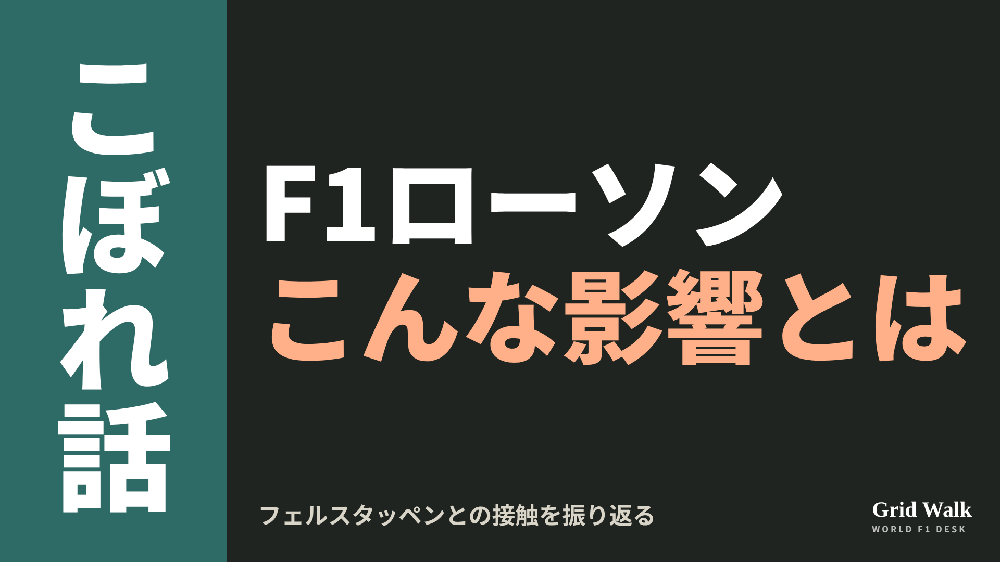<button class="cp dl" data-img="img/x_lawson-verstappen-underestimated-20261107.png" data-name="x_lawson-verstappen-underestimated-20261107.png">ダウンロード</button></li>
<li class="st"><div class="hd"><b>① noteをシェアするときの文</b></div><div class="bx" id="p12x0">メキシコのFP2でフェルスタッペンと接触し、2人とも1グリッド降格。ローソンは「こんな影響が出るとは思っていなかった」と振り返りました。noteにまとめました #F1jp #ローソン</div><button class="cp" data-plain="p12x0">コピー</button></li>
<li class="st"><div class="hd"><b>② ①への返信</b></div><div class="bx" id="p12x1">ほかの海外記事も読みたい方は、F1 Grid Walkへ。
https://f1gridwalk.github.io/lens/lawson-verstappen-underestimated-20261107/?utm_source=x&amp;utm_campaign=lawson-verstappen-underestimated-20261107</div><button class="cp" data-plain="p12x1">コピー</button></li>
<li class="st"><div class="hd"><b>③ ②への返信</b></div><div class="bx" id="p12x2">毎日の海外F1ニュースは、日本語でこちらにまとめています。
https://f1gridwalk.github.io/</div><button class="cp" data-plain="p12x2">コピー</button></li>
</ol></section></main><script>
function done(b,msg){const t=b.dataset.t||b.textContent;b.dataset.t=t;b.classList.add('ok');b.textContent=msg||'コピーしました';setTimeout(()=>{b.classList.remove('ok');b.textContent=t},2000)}
function selectEl(el){const r=document.createRange();r.selectNodeContents(el);const s=getSelection();s.removeAllRanges();s.addRange(r)}
async function rich(el,b){
  try{await navigator.clipboard.write([new ClipboardItem({'text/html':new Blob([el.innerHTML],{type:'text/html'}),'text/plain':new Blob([el.innerText],{type:'text/plain'})})]);done(b);return}catch(e){}
  selectEl(el);let ok=false;try{ok=document.execCommand('copy')}catch(e){}
  if(ok){getSelection().removeAllRanges();done(b)}else{done(b,'選択しました。コピーしてください')}}
async function plain(el,b){
  try{await navigator.clipboard.writeText(el.innerText);done(b);return}catch(e){}
  selectEl(el);let ok=false;try{ok=document.execCommand('copy')}catch(e){}
  if(ok){getSelection().removeAllRanges();done(b)}else{done(b,'選択しました。コピーしてください')}}
let dlns=null;(async()=>{try{dlns=await window.claude?.use?.("downloads")}catch(e){dlns=null}})();
async function img(src,b){
  b.dataset.t=b.dataset.t||b.textContent;
  if(!dlns){try{dlns=await window.claude?.use?.("downloads")}catch(e){}}
  if(!dlns){b.textContent='ダウンロードできませんでした';setTimeout(()=>{b.textContent=b.dataset.t},3500);return}
  try{const blob=await fetch(src).then(r=>r.blob());b.textContent='保存の確認を開いています…';
    await dlns.save({filename:b.dataset.name,data:blob});done(b,'ダウンロードしました')}
  catch(e){const c=e&&e.code;b.textContent=c==='declined'?'キャンセルしました':c==='rate_limited'?'少し待ってからもう一度押してください':'ダウンロードできませんでした';setTimeout(()=>{b.textContent=b.dataset.t},3500)}}
document.querySelectorAll('.cp').forEach(b=>b.addEventListener('click',()=>{
  if(b.dataset.rich)rich(document.getElementById(b.dataset.rich),b);
  else if(b.dataset.plain)plain(document.getElementById(b.dataset.plain),b);
  else img(b.dataset.img,b)}));
</script>